<!doctype html>
<html lang="en">
<head>
  <meta charset="utf-8">
  <meta name="viewport" content="width=device-width, initial-scale=1">
  <title>arxiv digest — 2026-10-01</title>
  <style>
:root {
  --bg: #ffffff;
  --fg: #1f2328;
  --muted: #59636e;
  --border: #d0d7de;
  --card: #f6f8fa;
  --link: #0969da;
}
body {
  max-width: 980px;
  margin: 0 auto;
  padding: 2rem 1rem 5rem;
  font-family: -apple-system, BlinkMacSystemFont, "Segoe UI", Helvetica, Arial, sans-serif;
  line-height: 1.55;
  color: var(--fg);
  background: var(--bg);
}
a { color: var(--link); }
img { max-width: 100%; height: auto; }
pre, code { background: var(--card); border-radius: 6px; }
pre { padding: 1rem; overflow-x: auto; }
blockquote { border-left: 4px solid var(--border); padding-left: 1rem; color: var(--muted); }
details { margin: 0.6rem 0; }
summary { cursor: pointer; font-weight: 600; }
.paper-figures-scroll {
  display: flex;
  gap: 1rem;
  overflow-x: auto;
  overscroll-behavior-x: contain;
  padding: 0.75rem 0.25rem 1rem;
  margin: 1rem 0 1.25rem;
  border-top: 1px solid var(--border);
  border-bottom: 1px solid var(--border);
  scroll-snap-type: x proximity;
}
.paper-figure-card {
  flex: 0 0 min(260px, 72vw);
  scroll-snap-align: start;
  background: var(--card);
  border: 1px solid var(--border);
  border-radius: 12px;
  padding: 0.55rem;
}
.paper-figure-card img {
  display: block;
  width: 100%;
  max-height: 240px;
  object-fit: contain;
  background: white;
  border-radius: 8px;
}
.paper-figure-caption {
  display: block;
  margin-top: 0.5rem;
  color: var(--muted);
  font-size: 0.85rem;
}
.figure-strip-hint {
  color: var(--muted);
  font-size: 0.9rem;
  margin-bottom: -0.3rem;
}
</style>
  <!-- MathJax: renders $...$ inline math and $$...$$ display math, plus
       \(...\) and \[...\]. Loaded from the official CDN; works offline
       once cached. Configured to skip code/pre blocks so arxiv IDs that
       look like dollar amounts don't get mangled. -->
  <script>
    window.MathJax = {
      tex: {
        inlineMath: [['$', '$'], ['\\(', '\\)']],
        displayMath: [['$$', '$$'], ['\\[', '\\]']],
        processEscapes: true,
        processEnvironments: true
      },
      options: {
        skipHtmlTags: ['script', 'noscript', 'style', 'textarea', 'pre', 'code'],
        ignoreHtmlClass: 'tex2jax_ignore',
        processHtmlClass: 'tex2jax_process'
      }
    };
  </script>
  <script id="MathJax-script" async
    src="https://cdn.jsdelivr.net/npm/mathjax@3/es5/tex-chtml.js"></script>
</head>
<body>
<header style="background-color: #333; color: white; padding: 15px; margin-bottom: 20px;">
  <h1 style="margin: 0; font-size: 24px;">
    <a href="https://ochelpan.github.io/arXiv_clean/" style="color: white; text-decoration: none;">Main</a>
  </h1>
</header>

<h1>Daily arXiv Report</h1>

<hr>
<p>
<a href="index.html">← Index</a>
 · <a href="papers_01.html">← Previous</a> · <a href="papers_03.html">Next →</a>
</p>
<hr>

<h2>Papers 21–40</h2>
<p><a id="paper-2609.36874"></a></p>
<h3 id="closing-a-single-copy-gap-to-the-holevo-bound-with-two-copy-measurements"><a href="http://arxiv.org/abs/2609.36874v1">Closing a single-copy gap to the Holevo bound with two-copy measurements</a></h3>
<p><strong>Authors:</strong> Changhao Li<br>
<strong>Type:</strong> both · <strong>Category:</strong> quantum information and computing · <strong>PDF:</strong> <a href="https://arxiv.org/pdf/2609.36874v1">https://arxiv.org/pdf/2609.36874v1</a><br>
<strong>Analysis basis:</strong> full PDF text, analyzed in chunks
<strong>Topic relevance:</strong> 🔥 <code>QC/QI experiment</code> <strong>4/5</strong> · <code>quantum measurements</code> <strong>3/5</strong></p>
<div class="figure-strip-hint">↔ Scroll figures horizontally</div>
<div class="paper-figures-scroll">
<figure class="paper-figure-card">
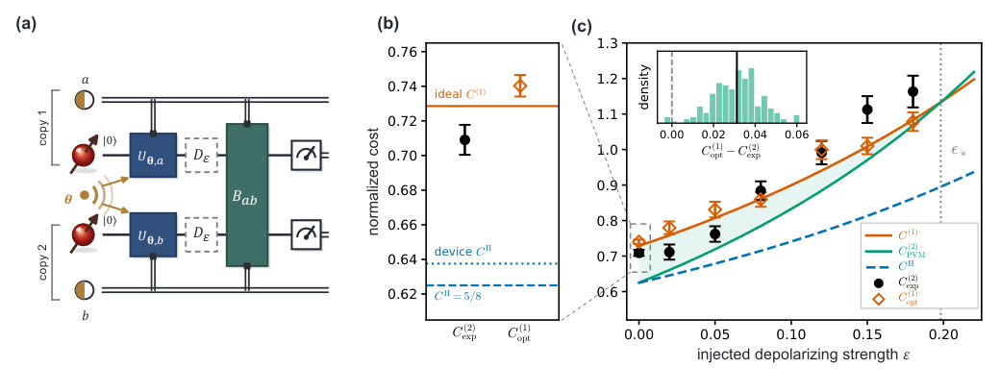
<figcaption class="paper-figure-caption"><b>Fig 1.</b> FIG. 1. Experimental demonstration on ibm boston. (a) Hybrid two-transmon protocol. The classical flags a and b are sampled uniformly and select the conditional encodings Uθ,a and Uθ,b, the optional dashed gates inject the depolarizing strength ϵ, and the sector-selected basis change Bab followed by computational-basis readout implements the collective measurement of Eqs. (8) and (9). (b) At ϵ = 0, the measured cost C(2) exp (filled circle) lies below the certified single-copy lower bound C(1) opt (open diamond), with the ideal C(1) (solid orange), the reconstructed device Holevo bound of 0.638 (dotted blue), and CH = 5/8 (dashed blue) as references. (c) Measured costs against the injected...</figcaption>
</figure>
</div>

<p><strong>Summary.</strong> This paper tackles the fundamental question of how close finite quantum measurements can get to the ultimate theoretical precision limit (the Holevo bound). By constructing a specific, rank-deficient model, the authors prove that the gap between single-copy and two-copy estimates can close. They validate this theoretically derived advantage experimentally using superconducting qubits, showing the two-copy measurement significantly outperforms single-copy estimates even when noise is present.</p>
<p><strong>Why it may be interesting.</strong> This work directly addresses the fundamental limits of quantum measurement precision, providing concrete physical examples (superconducting qubits) where collective measurements can surpass single-shot estimates, linking fundamental theory (model rank) to experimental capability.</p>
<details>
<summary>Detailed structure</summary>
<p><strong>Main problem.</strong> The paper investigates the finite-copy gap in quantum multi-parameter estimation, specifically comparing the single-copy optimum bound to the ultimate Holevo bound.</p>
<p><strong>Main result.</strong> The authors disprove the universal persistence of this gap beyond two parameters by constructing a rank-deficient three-parameter model where the two-copy measurement achieves the Holevo bound. Experimentally, they demonstrate a two-copy advantage over single-copy bounds using superconducting qubits.</p>
<p><strong>Method.</strong> The study combines theoretical proofs regarding model rank deficiency with experimental implementation using superconducting transmon qubits to measure estimation costs under controlled noise.</p>
<p><strong>Model / system.</strong> The theoretical model is a three-parameter, rank-two quantum estimation model. Experimentally, the platform uses superconducting transmon qubits on an IBM processor, implementing a hybrid two-transmon protocol.</p>
<p><strong>Key observables.</strong> The primary observables are the estimation error costs: the single-copy optimum ($C^{(1)}_{opt}$), the two-copy measurement cost ($C^{(2)}_{exp}$), and the theoretical Holevo bound ($CH$).</p>
<p><strong>Important parameters / regimes.</strong> The key parameters include the number of parameters (three), the number of copies (two), and the injected depolarizing noise strength ($\epsilon$).</p>
<p><strong>Assumptions / limitations.</strong> The theoretical analysis distinguishes between rank-deficient and full-rank models, where rank deficiency is shown to be necessary for the gap closure. Experimentally, the analysis relies on readout error mitigation techniques.</p>
<p><strong>Figures summary.</strong> Figure 1 compares the measured two-copy cost below the single-copy and Holevo bounds, showing the advantage persists over a finite noise range. Figure S2 tracks the difference between the single-copy lower bound and measured costs across various injected noise levels.</p>
<p><strong>Paper structure.</strong> The paper first establishes the theoretical framework by constructing a specific rank-deficient model to close the gap at two copies. It then proves that full-rank models maintain the gap for any finite copy number. The latter part details the experimental realization on superconducting qubits, measuring the advantage and its robustness against controlled depolarization.</p>
</details>
<details>
<summary>Abstract</summary>
<p>The Holevo Cramér-Rao bound sets the asymptotically attainable precision of quantum multiparameter estimation, but its attainability with finite quantum state copies remains unresolved in general. While a gap between the single-copy optimum and the Holevo bound persists at any finite copy number for two-parameter estimation models, the higher-parameter case has remained open. Here we disprove universal finite-copy gap persistence beyond two parameters by constructing a three-parameter rank-two model whose Holevo bound is unattainable with one copy but attained exactly with two. We further prove finite-copy persistence for full-rank models with any number of parameters. We then experimentally implement the two-copy collective measurement for the constructed model using superconducting qubits. We observe a two-copy estimation error below the single-copy and separate-measurement bounds determined from state tomography. By introducing controlled depolarization, we show that this precision advantage persists over a finite noise range. Our results connect the attainability of ultimate quantum precision to the structure of the multiparameter estimation model and the resources available for collective measurements.</p>
</details>
<p><sub><a href="#top">↑ back to top</a></sub></p>

<p><a id="paper-2609.36555"></a></p>
<h3 id="generalized-effective-spin-chain-formalism-for-multicomponent-anyons-in-one-dimensional-optical-lattices"><a href="http://arxiv.org/abs/2609.36555v1">Generalized Effective Spin-Chain formalism for multicomponent anyons in one-dimensional optical lattices</a></h3>
<p><strong>Authors:</strong> Sagarika Basak, Xi-Wen Guan, Han Pu<br>
<strong>Type:</strong> theory · <strong>Category:</strong> other · <strong>PDF:</strong> <a href="https://arxiv.org/pdf/2609.36555v1">https://arxiv.org/pdf/2609.36555v1</a><br>
<strong>Analysis basis:</strong> full PDF text, analyzed in chunks
<strong>Topic relevance:</strong> 🔥 <code>analog quantum simulation</code> <strong>4/5</strong> · <code>Frenkel-Kontorova</code> <strong>1/5</strong> · <code>Keldysh / 2PI / non-Gaussian methods</code> <strong>1/5</strong> · <code>non-equilibrium universality</code> <strong>1/5</strong></p>
<div class="figure-strip-hint">↔ Scroll figures horizontally</div>
<div class="paper-figures-scroll">
<figure class="paper-figure-card">
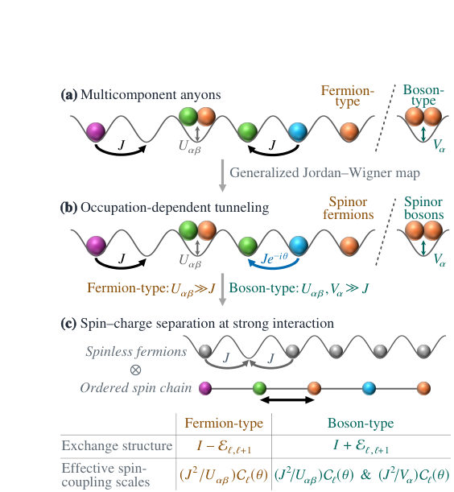
<figcaption class="paper-figure-caption"><b>Fig 1.</b> Figure 1. Spin–charge separation in strongly interacting anyons. (a) Multicomponent anyons with tunneling 𝐽and on-site interactions 𝑈𝛼𝛽and 𝑉𝛼. Colors denote internal components; split terminal wells contrast allowed on-site occupations for fermion-/boson-type anyons. (b) A generalized Jordan–Wigner transformation maps anyons onto multicomponent fermions/bosons with occupation-dependent tunnel- ing. (c) In the strong-interaction regime, the low-energy theory sepa- rates into a spinless-fermion charge sector and an ordered spin chain.</figcaption>
</figure>
<figure class="paper-figure-card">

<figcaption class="paper-figure-caption"><b>Fig 2.</b> Figure 2. Statistical-phase-driven asymmetric reconstruction of intrinsic momentum distributions. Intrinsic anyonic momen- tum distribution 𝑛𝑘(𝜃), averaged over 𝑁internal components, from GESC. The statistical phase, 𝜃, shifts the dominant features and re- distributes spectral weight. At fixed population per component, in- creasing 𝑁also increases the filling. Colors saturate for 𝑛𝑘≥1.</figcaption>
</figure>
<figure class="paper-figure-card">
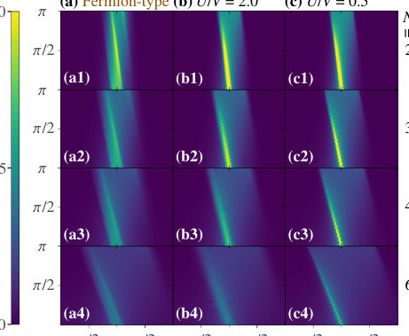
<figcaption class="paper-figure-caption"><b>Fig 3.</b> Figure 3 shows that fractional exchange statistics primarily redistributes spectral weight rather than strongly changing the overall momentum width. The redistribution 𝑅grows with 𝜃and remains finite at 𝜃= 𝜋, even though both AM and ¯𝑘 return to zero. Restoring reflection symmetry therefore does not restore the initial distribution. Mirror asymmetry peaks at</figcaption>
</figure>
<figure class="paper-figure-card">
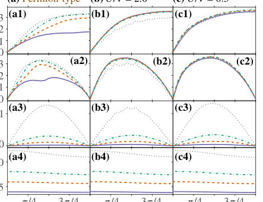
<figcaption class="paper-figure-caption"><b>Fig 4.</b> Figure 3. Momentum reconstruction persists after inversion sym- metry is restored. Four diagnostics quantify the intrinsic anyonic momentum distributions in Fig. 2, using unit-normalized distributions over the full first Brillouin zone [Eqs. (26)–(29)]. Redistribution 𝑅 remains finite at 𝜃= 𝜋, where the mirror asymmetry AM and mean momentum ¯𝑘vanish. The width 𝜎𝑘varies only weakly with 𝜃.</figcaption>
</figure>
<figure class="paper-figure-card">
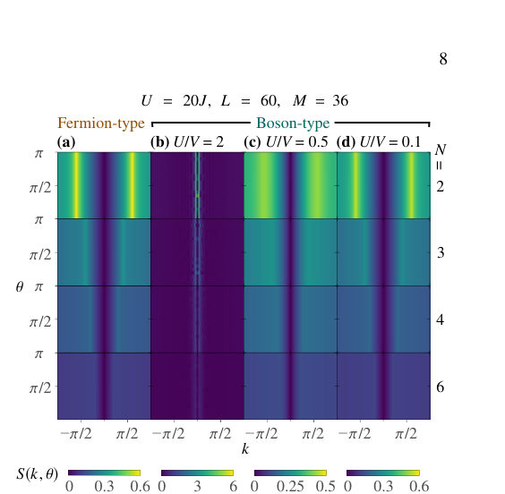
<figcaption class="paper-figure-caption"><b>Fig 5.</b> Figure 4. Interaction anisotropy controls the statistical sensitivity of spin correlations. GESC spin structure factors 𝑆(𝑘, 𝜃) at fixed total population 𝑀. Boson-type anyons with 𝑈/𝑉= 2 concentrate spin correlations at small nonzero momenta, whereas the other cases exhibit broader antiferromagnetic profiles. Unlike Figs. 2 and 3, here the total filling is fixed at 𝑀/𝐿= 0.6.</figcaption>
</figure>
</div>

<p><strong>Summary.</strong> This paper introduces the Generalized Effective Spin-Chain (GESC) formalism to study multicomponent anyons in 1D optical lattices. The method achieves a spin-charge separation, allowing researchers to map complex anyonic interactions onto an effective spin chain. It reveals that fractional statistics govern transport dynamics through virtual spin exchanges, offering a computationally efficient alternative to simulating the full, intractable model.</p>
<p><strong>Why it may be interesting.</strong> This work provides a powerful, computationally efficient theoretical tool (GESC) to analyze exotic quantum statistics (anyons) in highly correlated systems, directly relevant to ultracold atomic simulations in optical lattices.</p>
<details>
<summary>Detailed structure</summary>
<p><strong>Main problem.</strong> The paper develops a generalized effective spin-chain (GESC) formalism to understand how fractional exchange statistics are preserved in strongly interacting multicomponent anyons confined to a one-dimensional optical lattice.</p>
<p><strong>Main result.</strong> The GESC formalism successfully separates spin and charge dynamics, showing that while the charge Hamiltonian is insensitive to the statistical phase, the phase manifests in spin-exchange coefficients, leading to direction-dependent, inversion-asymmetric transport out of equilibrium.</p>
<p><strong>Method.</strong> The authors use a perturbative expansion in the strong-interaction limit to map the complex Anyon-Hubbard model onto an effective spin-chain Hamiltonian, achieving a spin-charge separation perspective.</p>
<p><strong>Model / system.</strong> The system models multicomponent anyons (fermion-type and boson-type) in a 1D optical lattice, governed by generalized Anyon-Hubbard Hamiltonians. The core methodology involves mapping particle motion to spinless fermions (charge) and spin states to an ordered spin chain.</p>
<p><strong>Key observables.</strong> Spin-exchange coefficients ($C_\ell(	heta, t)$), impurity density profiles ($\langle n_{\ell,\downarrow} 
angle$), and the Root Mean Square (RMS) displacement ($W(t)$).</p>
<p><strong>Important parameters / regimes.</strong> The statistical phase ($    heta$), the ratio of interaction energy to tunneling energy (strong-interaction regime), and the component identity/interaction anisotropy.</p>
<p><strong>Assumptions / limitations.</strong> The derivation relies on a perturbative expansion in the strong-interaction limit, and the initial analysis assumes the statistical phase $  heta$ is spin-independent.</p>
<p><strong>Figures summary.</strong> Figures benchmark the GESC formalism against the full Anyon-Hubbard model for impurity density and $W(t)$ across various statistical phases ($    heta$), demonstrating quantitative agreement while showing significant computational savings.</p>
<p><strong>Paper structure.</strong> The paper systematically introduces the multicomponent Anyon-Hubbard models, develops the GESC formalism via perturbative decoupling, analyzes ground-state correlations, and finally investigates dynamic processes like impurity transport.</p>
</details>
<details>
<summary>Abstract</summary>
<p>We develop a generalized effective spin-chain (GESC) formalism for strongly interacting multicomponent anyons in a one-dimensional (1D) optical lattice. By mapping particle motion onto spinless fermions and spin states onto an ordered chain, this framework provides a spin--charge-separated perspective on the physical effects of fractional exchange statistics. In the strong-interaction regime, the leading-order charge Hamiltonian becomes independent of the statistical phase; instead, virtual tunneling through doubly occupied states directly imprints this phase on the spin-exchange coefficients. The GESC formalism captures ground-state properties of the full Anyon--Hubbard model reported in S.~Basak, X.-W.~Guan, and H.~Pu, unpublished manuscript (2026), and reveals that their statistical dependence is predominantly encoded in the explicit anyonic structure of the observables rather than the underlying spin ground state. This formalism uncovers that, out of equilibrium, successive spin exchanges accumulate direction-dependent phases; the resulting interference drives crossover from dispersive to localized impurity transport and generates inversion-asymmetric propagation at intermediate statistics. Suppressed expansion persists for identical and distinguishable impurities, with differences in propagation governed by the interplay between impurity identity and interaction anisotropy. Ultimately, GESC offers a versatile, computationally efficient theoretical framework that connects macroscopic dynamics to microscopic virtual exchange processes, conferring a unique spin--charge-separated vantage for resolving how fractional exchange statistics survives strong interactions and manifests distinctly across static and dynamical regimes.</p>
</details>
<p><sub><a href="#top">↑ back to top</a></sub></p>

<p><a id="paper-2609.37032"></a></p>
<h3 id="finite-momentum-trimers-and-cooper-quartets-in-a-one-dimensional-fermi-gas-with-coexistent-math156math-and-math157math-wave-interactions"><a href="http://arxiv.org/abs/2609.37032v1">Finite-momentum trimers and Cooper quartets in a one-dimensional Fermi gas with coexistent $s$- and $p$-wave interactions</a></h3>
<p><strong>Authors:</strong> Yixin Guo<br>
<strong>Type:</strong> theory · <strong>Category:</strong> quantum gases · <strong>PDF:</strong> <a href="https://arxiv.org/pdf/2609.37032v1">https://arxiv.org/pdf/2609.37032v1</a><br>
<strong>Analysis basis:</strong> full PDF text, analyzed in chunks
<strong>Topic relevance:</strong> 🔥 <code>analog quantum simulation</code> <strong>4/5</strong> · <code>Keldysh / 2PI / non-Gaussian methods</code> <strong>2/5</strong></p>
<div class="figure-strip-hint">↔ Scroll figures horizontally</div>
<div class="paper-figures-scroll">
<figure class="paper-figure-card">
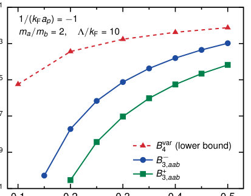
<figcaption class="paper-figure-caption"><b>Fig 1.</b> FIG. 1. Weak-coupling binding scales at 1/(kFap) = −1, ma/mb = 2, and Λ/kF = 10. Circles and squares give the zero-momentum aab trimer bindings B− 3,aab and B+ 3,aab in the inversion parities π = −1 and +1, respectively. Triangles give the variational lower bound Bvar 4 = Edd −E4,trial on the quartet binding, where E4,trial is the energy of the aa+bb trial state. Each cluster is referenced to its own breakup threshold. Lines guide the eye between computed points.</figcaption>
</figure>
<figure class="paper-figure-card">
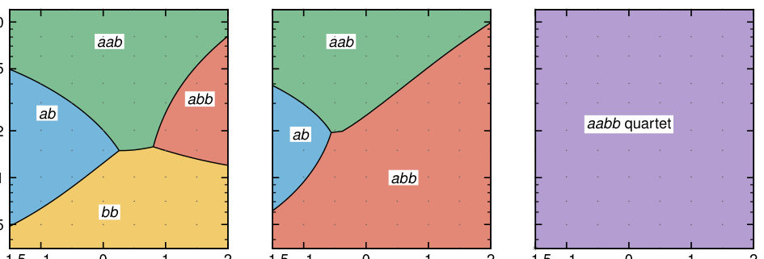
<figcaption class="paper-figure-caption"><b>Fig 2.</b> FIG. 2. Lowest-lying Cooper-cluster comparison at fixed chemical potentials. (a) Pairs and trimers restricted to P = 0. (b) The comparison after minimizing the trimer energy over its total momentum. The pair minima are at P = 0. (c) Including the quartet, which lies below the pair and trimer branches, minimized over their momenta, at every marked point. Dots mark integral-equation roots, and the star marks an independent quartet trial bound. The boundaries in (a) and (b) are solved directly from the STM energy condition (Appendix A 2) and joined by straight segments between calculated points. Markers show the 88 sampled couplings. Panel (c) has no interior boundary in this window. All...</figcaption>
</figure>
<figure class="paper-figure-card">
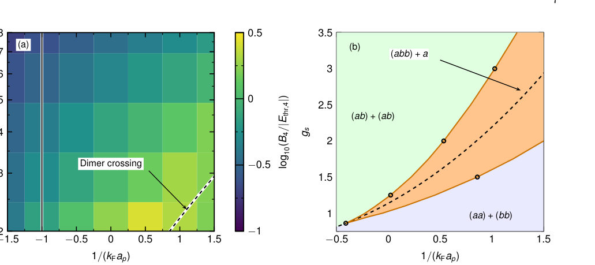
<figcaption class="paper-figure-caption"><b>Fig 3.</b> FIG. 3. (a) Quartet binding in the coupling plane, with colors indicating log10(B4/|Ethr,4|) at 35 sampled couplings in −1.5 ≤gp ≤1.5, 2 ≤gs ≤8. Colors use n = 18. Between n = 14 and 18, B4 changes by at most about 5%, and n = 22, a longer axis, or a different node distribution change it by at most about 3% at four test points (Appendix A 3). The solid line marks the cut gp = −1 discussed in Sec. III D. (b) The lowest fragmentation channel near the dimer crossing: (aa) + (bb), (ab) + (ab), and (abb) + a. The strip boundaries are solved from moving-trimer calculations. Circles mark higher-order checks. The dashed curve in both panels is the equality of the two dimer-pair energies. Here ma/mb...</figcaption>
</figure>
<figure class="paper-figure-card">
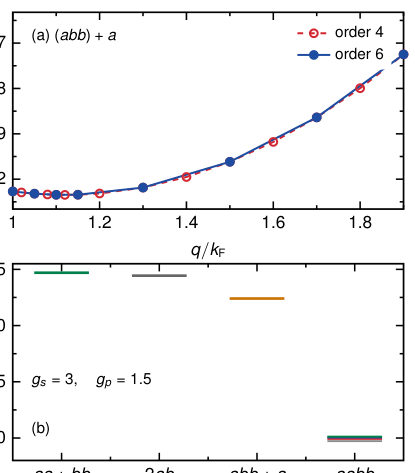
<figcaption class="paper-figure-caption"><b>Fig 4.</b> FIG. 4. Breakup competition at gs = 3 and gp = 1.5. (a) The moving abb trimer plus an a atom, referenced to the lowest two-dimer energy, for moving-trimer panels of order 4 and 6, which coincide on this scale. (b) The two dimer-pair energies, the minimized trimer–atom energy, and quartet energies on the n = 14, 18, 22, 26 grids (gray, red, blue, and green lines in the last column). The quartet lies below all three fragment channels. Momenta and energies are in units of kF and k2 F/mb. Other parameters are those of Fig. 3.</figcaption>
</figure>
<figure class="paper-figure-card">
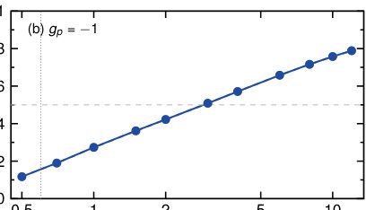
<figcaption class="paper-figure-caption"><b>Fig 5.</b> FIG. 5. Four-body properties along gp = −1. (a) Quartet binding on the integral-equation grids n = 14 and 18. (b) Even-wave fraction Fs = |⟨Vs⟩|/(|⟨Vs⟩| + |⟨Vp⟩|), from energy derivatives on the same grids (Appendix A 3). The vertical dotted line marks the dimer crossing. The horizontal line in (b) denotes equal even- and odd-wave interaction energies. Line styles are common to both panels. Other parameters are those of Fig. 3.</figcaption>
</figure>
</div>

<p><strong>Summary.</strong> This paper theoretically examines the formation and binding of Cooper quartets and trimers in a 1D Fermi gas subjected to both s-wave and p-wave interactions. Using variational methods, the authors demonstrate that the quartet binding can be robustly strong, even when considering the competition from other bound states. The findings highlight that the binding mechanism is complex, depending on more than just the strongest pairwise interaction.</p>
<p><strong>Why it may be interesting.</strong> This work directly addresses complex many-body physics in ultracold atomic gases, specifically the interplay between different pairing symmetries (s-wave vs. p-wave) and the formation of exotic few-body states like quartets.</p>
<details>
<summary>Detailed structure</summary>
<p><strong>Main problem.</strong> The study investigates the competition and coexistence of different pairing channels (s-wave and p-wave) and the formation of multi-particle clusters (trimers and Cooper quartets) in a Fermi gas.</p>
<p><strong>Main result.</strong> The analysis shows that the Cooper quartet binding can be significantly stronger than the trimer binding, and that the binding is not determined solely by the strongest pair interaction or the dominant interaction energy.</p>
<p><strong>Method.</strong> The research employs a variational approach to minimize the energy of the multi-particle clusters (trimers and quartets) within the framework of a generalized Cooper theory.</p>
<p><strong>Model / system.</strong> The system is a one-dimensional two-component Fermi gas described by a Hamiltonian including kinetic energy and coexistent s-wave and p-wave attraction terms. Interactions are regularized in the relative momentum to maintain Galilean invariance.</p>
<p><strong>Key observables.</strong> Binding energy of the quartet relative to its breakup channels, trimer dispersion, and density dependence of binding.</p>
<p><strong>Important parameters / regimes.</strong> Coexistence of s- and p-wave interactions, finite total momentum of clusters, and varying interspecies attraction strength.</p>
<p><strong>Assumptions / limitations.</strong> The analysis assumes equal densities ($k_{F,a} = k_{F,b}$) and is performed above an inert Fermi sea; the variational energy provides an upper bound on the true energy.</p>
<p><strong>Figures summary.</strong> Figures illustrate weak-coupling binding scales for the quartet versus the trimer, and show the momentum dependence of trimer and trimer-atom energies at various coupling strengths.</p>
<p><strong>Paper structure.</strong> The paper progresses from defining the model Hamiltonian and using variational methods to calculate cluster energies, analyzing the hierarchy of binding energies, and finally comparing in-vacuum versus in-medium (finite density) results.</p>
</details>
<details>
<summary>Abstract</summary>
<p>We study finite-momentum trimers and Cooper quartets in a one-dimensional two-component Fermi gas with coexistent $s$- and $p$-wave interactions, regularized in the relative momentum of each pair so that they remain Galilean invariant. Pauli blocking alone then makes the trimer dispersion deviate from free center-of-mass motion, so the trimer energy can be lowest at finite total momentum. Allowing this motion expands the $abb$ region among pairs and trimers and removes the region where an odd-wave pair is lowest. The $aabb$ quartet lies below all these branches at every sampled coupling, and in a strip starting on the crossing of the two dimer-pair channels its lowest breakup channel is a moving $abb$ trimer and an atom. At weak interspecies attraction, a variational bound shows that two odd-wave Cooper pairs bind into a quartet, whose binding exceeds that of the coexisting trimer by orders of magnitude as the attraction weakens. At stronger interspecies attraction, the quartet binding relative to two unlike-species dimers disappears when the odd-wave interaction is switched off, although the even-wave interaction dominates the interaction energy. Relative to the in-vacuum case, the Fermi sea enhances the weak-coupling quartet binding, and at fixed scattering lengths the quartet binding grows with density while the coexisting trimer becomes much shallower. These results show that neither the most strongly bound pair nor the dominant interaction energy alone determines whether the quartet binds.</p>
</details>
<p><sub><a href="#top">↑ back to top</a></sub></p>

<p><a id="paper-2609.37144"></a></p>
<h3 id="margenau-hill-distribution-as-a-necessary-and-sufficient-signature-of-measurement-incompatibility"><a href="http://arxiv.org/abs/2609.37144v1">Margenau-Hill distribution as a Necessary and Sufficient Signature of Measurement Incompatibility</a></h3>
<p><strong>Authors:</strong> Partha Patra, A. K. Pan<br>
<strong>Type:</strong> both · <strong>Category:</strong> other · <strong>PDF:</strong> <a href="https://arxiv.org/pdf/2609.37144v1">https://arxiv.org/pdf/2609.37144v1</a><br>
<strong>Analysis basis:</strong> full PDF text, analyzed in chunks
<strong>Topic relevance:</strong> 🔥 <code>quantum measurements</code> <strong>4/5</strong> · <code>interference shaping light</code> <strong>1/5</strong></p>
<div class="figure-strip-hint">↔ Scroll figures horizontally</div>
<div class="paper-figures-scroll">
<figure class="paper-figure-card">
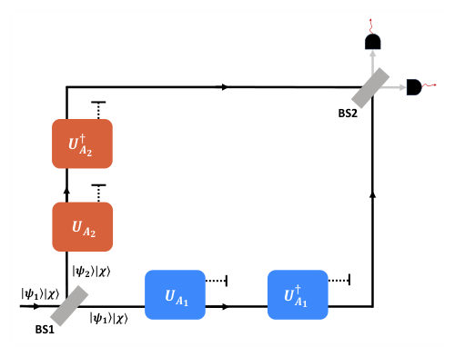
<figcaption class="paper-figure-caption"><b>Fig 1.</b> Figure 1: An interferometric setup for testing MH quasi-probability distribution. See text for detailed description.</figcaption>
</figure>
</div>

<p><strong>Summary.</strong> This paper establishes that the positivity of the Margenau-Hill quasi-probability distribution serves as a necessary and sufficient condition for two unsharp quantum measurements to be jointly measurable. The authors derive the mathematical criteria and propose an experimental protocol using an interferometer to directly measure this distribution, providing a powerful test for quantum incompatibility.</p>
<p><strong>Why it may be interesting.</strong> This work provides a concrete, experimentally testable diagnostic tool (the MH distribution) to quantify quantum incompatibility, bridging abstract mathematical concepts with physical measurement limitations.</p>
<details>
<summary>Detailed structure</summary>
<p><strong>Main problem.</strong> The paper aims to establish a rigorous, operational link between the concept of measurement incompatibility and the mathematical positivity of the Margenau-Hill (MH) quasi-probability distribution for dichotomic observables.</p>
<p><strong>Main result.</strong> It is proven that for unsharp dichotomic measurements, the positivity of the MH distribution is necessary and sufficient for the measurements to be jointly measurable (i.e., compatible).</p>
<p><strong>Method.</strong> The authors derive joint measurability conditions by analyzing the positivity of the MH distribution, which is then experimentally tested using a modified Mach-Zehnder interferometer setup.</p>
<p><strong>Model / system.</strong> The study focuses on general quantum systems described by density matrices, specifically analyzing pairs (and generalizations to $n$) of dichotomic observables in an arbitrary finite dimension $d$.</p>
<p><strong>Key observables.</strong> The Margenau-Hill (MH) quasi-probability distribution, $q(a_1, a_2)$, and the expectation value $\langle P_\Psi 
angle$ measured in an interferometer.</p>
<p><strong>Important parameters / regimes.</strong> The dimension of the Hilbert space ($d$), and the parameters ($\lambda, \mu$) defining the unsharpness of the measurements.</p>
<p><strong>Assumptions / limitations.</strong> The equivalence between MH positivity and joint measurability is rigorously proven for two dichotomic unsharp observables; the generalization to $n$ observables relies on the assumption that they are mutually anticommuting.</p>
<p><strong>Figures summary.</strong> Figure 1 illustrates the interferometric setup, inspired by quantum-switch architectures, designed to directly measure the MH quasi-probability distribution.</p>
<p><strong>Paper structure.</strong> The paper first derives the general joint measurability condition for two observables, then proves the equivalence between MH positivity and joint measurability, generalizes this to $n$ observables, and concludes by detailing the experimental realization of the test using interferometry.</p>
</details>
<details>
<summary>Abstract</summary>
<p>Measurement incompatibility and the negativity of quasi-probability distributions both demonstrate the signature of nonclassicality. However, their relations largely remained qualitative, and no explicit operational connection has been established. We provide an operational link between measurement incompatibility and the Margenau-Hill(MH) quasi-probability distribution associated with two dichotomic observables. { We first derive the joint measurability (measurement compatibility) condition for any pair of dichotomic observables in arbitrary finite dimension $d$.} We then rigorously prove that for any pair of unsharp dichotomic measurements in dimension $d$, the positivity of the MH distribution is equivalent to joint measurability \emph{i.e.}, the MH distribution is positive \emph{if and only if} the measurements are jointly measurable. We further introduce the MH-like quasi-probability distribution for $n$ dichotomic unsharp observables in arbitrary finite dimension and derive a sufficient condition of joint-measurability when the observables are mutually anticommuting. Finally, we propose an interferometric setup, inspired by quantum-switch architectures, that directly reconstructs MH quasi-probability which in turn provides a test of incompatibility.</p>
</details>
<p><sub><a href="#top">↑ back to top</a></sub></p>

<p><a id="paper-2609.37059"></a></p>
<h3 id="quantum-simulation-of-detuning-controlled-proximity-induced-localization-and-reentrant-delocalization-in-a-quasiperiodic-ladder"><a href="http://arxiv.org/abs/2609.37059v1">Quantum Simulation of Detuning-Controlled Proximity-Induced Localization and Reentrant Delocalization in a Quasiperiodic Ladder</a></h3>
<p><strong>Authors:</strong> Mrinal Kanti Giri, Shih Tai-Ming, Pinaki Sengupta, Pochung Chen<br>
<strong>Type:</strong> both · <strong>Category:</strong> disordered systems and neural networks · <strong>PDF:</strong> <a href="https://arxiv.org/pdf/2609.37059v1">https://arxiv.org/pdf/2609.37059v1</a><br>
<strong>Analysis basis:</strong> full PDF text, analyzed in chunks
<strong>Topic relevance:</strong> 🔥 <code>analog quantum simulation</code> <strong>4/5</strong> · <code>Frenkel-Kontorova</code> <strong>1/5</strong></p>
<div class="figure-strip-hint">↔ Scroll figures horizontally</div>
<div class="paper-figures-scroll">
<figure class="paper-figure-card">
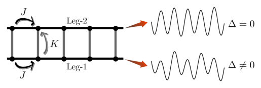
<figcaption class="paper-figure-caption"><b>Fig 1.</b> FIG. 1: The pictorial representation of the coupled AA chain, where Leg-1 (or s-AA chain) corresponds to the AA chain with a staggered on-site potential (∆̸= 0) and Leg-2 (or p- AA chain) corresponds to the pure AA chain (∆= 0).</figcaption>
</figure>
<figure class="paper-figure-card">
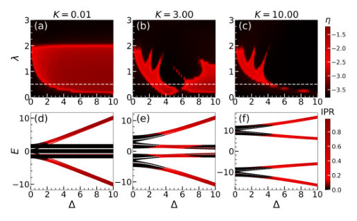
<figcaption class="paper-figure-caption"><b>Fig 2.</b> FIG. 2: Panels (a)-(c) show the phase diagrams in the λ-∆ plane, where the color scale represents η defined in Eq. 2; the dashed green line marks λ = 0.5. The black regions represent the extended or localized regimes, while the red regions indi- cate the intermediate phase (IP), where extended and local- ized eigenstates coexist. Panels (d)-(f) show the correspond- ing energy spectra as a function of ∆at λ = 0.5, with the color scale denoting the inverse participation ratio IPR of the eigenstate. Here, we consider the chain of length L = 3000.</figcaption>
</figure>
<figure class="paper-figure-card">
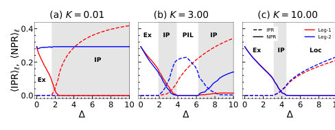
<figcaption class="paper-figure-caption"><b>Fig 3.</b> FIG. 3: Leg-resolved ⟨IPR⟩ℓand ⟨NPR⟩ℓas a function of ∆ for (a) K = 0.01, (b) K = 3.0, and (c) K = 10.0. Here, each chain has length L = 3000 and λ = 0.5. The labels denote Ex: extended phase, IP: intermediate phase, PIL: proximity- induced localization, and Loc: localized phase.</figcaption>
</figure>
<figure class="paper-figure-card">
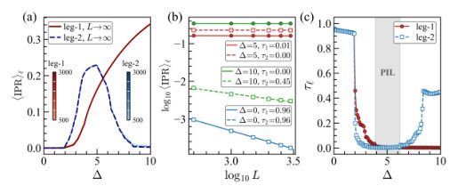
<figcaption class="paper-figure-caption"><b>Fig 4.</b> FIG. 4: Leg-resolved finite-size scaling for K = 3.0 and λ = 0.5. (a) ⟨IPR⟩ℓversus ∆for various system sizes L and the extrapolated L →∞limit. (b) Extraction of the scaling exponent ¯τℓat representative detuning ∆= 0, 5, and 10. (c) Scaling exponent ¯τℓas a function of ∆, highlighting proximity-induced localization (¯τ1 = ¯τ2 = 0) and re-entrant delocalization on leg-2 (¯τ2 &gt; 0)</figcaption>
</figure>
<figure class="paper-figure-card">
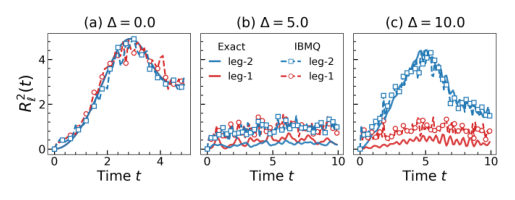
<figcaption class="paper-figure-caption"><b>Fig 5.</b> FIG. 5: Leg-resolved mean-square displacement R2 ℓ(t) ob- tained from exact evolution (solid lines) and IBMQ simula- tions (dashed lines) for (a) ∆= 0, (b) ∆= 5, and (c) ∆= 10 at K = 3. Red and Blue curves correspond to leg-1 and leg-2, respectively.</figcaption>
</figure>
</div>

<p><strong>Summary.</strong> This work explores how detuning can control localization and delocalization in a quasiperiodic ladder system. By applying detuning selectively to one leg, the researchers induce localization in the coupled neighbor, which can then re-enter a delocalized state. The findings are validated using both theoretical diagnostics and real-time quantum simulations on quantum hardware.</p>
<p><strong>Why it may be interesting.</strong> The ability to programmatically control localization/delocalization using detuning in a quasiperiodic setting provides a powerful platform for studying transport and many-body physics in engineered quantum materials.</p>
<details>
<summary>Detailed structure</summary>
<p><strong>Main problem.</strong> The study investigates proximity-induced localization (PIL) and subsequent re-entrant delocalization in coupled quasiperiodic ladder systems.</p>
<p><strong>Main result.</strong> The research demonstrates that applying a staggered detuning to one leg can induce localization in the neighboring leg, and further detuning can cause the system to re-enter a delocalized state, controllable via leg-selective detuning.</p>
<p><strong>Method.</strong> The study uses both static numerical diagnostics (IPR, NPR) and real-time quantum simulations on IBM Quantum hardware to measure wavefunction spreading.</p>
<p><strong>Model / system.</strong> The model is a two-leg Aubry-André (AA) ladder governed by a Hamiltonian involving intra-leg hopping, inter-leg coupling, and a staggered detuning ($\Delta$) applied to one leg.</p>
<p><strong>Key observables.</strong> Inverse Participation Ratio ($ ext{IPR}$), Normalized Participation Ratio ($ ext{NPR}$), Mean-Square Displacement ($ ext{MSD}$), and Participation Entropy ($S_{  ext{PE}}^2$).</p>
<p><strong>Important parameters / regimes.</strong> Detuning ($\Delta$), inter-leg coupling ($K$), and quasiperiodic potential strength ($\lambda$). Key regimes include weak and strong coupling limits.</p>
<p><strong>Assumptions / limitations.</strong> The analysis relies on mapping the system to qubits for quantum simulation and uses post-selection techniques to focus on the single-particle sector.</p>
<p><strong>Figures summary.</strong> Figures illustrate phase diagrams ($\lambda-\Delta$ plane) showing localization regimes, and show leg-resolved diagnostics ($\langle	ext{IPR}
angle_{\ell}, \langle	ext{NPR}
angle_{\ell}$) versus $\Delta$ to distinguish different physical regimes.</p>
<p><strong>Paper structure.</strong> The paper progresses from defining the coupled AA ladder Hamiltonian and analyzing localization diagnostics in different coupling limits, to demonstrating PIL and re-entrant delocalization using both static calculations and time-resolved quantum simulations.</p>
</details>
<details>
<summary>Abstract</summary>
<p>We demonstrate proximity-induced localization and re-entrant delocalization in a detuned quasiperiodic ladder. In the weak-quasiperiodic regime, where uncoupled Aubry-André chains are extended, a staggered detuning applied to only one leg induces localization in the neighboring leg through inter-leg hybridization. With further increasing detuning, the pure chain re-enters a delocalized regime, producing a delocalized-localized-delocalized sequence without directly modifying its quasiperiodic potential. We identify these regimes using static localization diagnostics and demonstrate experimentally accessible dynamical signatures on IBM Quantum hardware: strongly suppressed wavefunction spreading in the proximity-localized regime and its re-entrant recovery at larger detuning. These results establish leg-selective detuning as a programmable control knob for inducing and reversing localization in coupled quasiperiodic systems.</p>
</details>
<p><sub><a href="#top">↑ back to top</a></sub></p>

<p><a id="paper-2609.36356"></a></p>
<h3 id="artificial-versus-natural-atoms-the-uncanny-capability-of-the-many-body-schrodinger-equation-to-produce-emergent-behavior"><a href="http://arxiv.org/abs/2609.36356v1">Artificial versus Natural Atoms: The uncanny capability of the many-body Schrödinger equation to produce emergent behavior</a></h3>
<p><strong>Authors:</strong> Constantine Yannouleas<br>
<strong>Type:</strong> both · <strong>Category:</strong> strongly correlated electrons · <strong>PDF:</strong> <a href="https://arxiv.org/pdf/2609.36356v1">https://arxiv.org/pdf/2609.36356v1</a><br>
<strong>Analysis basis:</strong> full PDF text, analyzed in chunks
<strong>Topic relevance:</strong> 🔥 <code>analog quantum simulation</code> <strong>4/5</strong></p>
<div class="figure-strip-hint">↔ Scroll figures horizontally</div>
<div class="paper-figures-scroll">
<figure class="paper-figure-card">
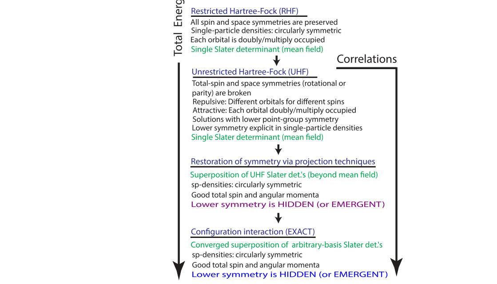
<figcaption class="paper-figure-caption"><b>Fig 1.</b> Figure 1. Synopsis of the method of hierarchical approximations, illustrating that a symmetry breaking at the mean-field level (single UHF Slater determinant) must be accompanied by a subsequent post-Hartree-Fock step of symmetry restoration, yielding a linear superposition of non-orthogonal UHF Slater determinants. The downward arrow on the left emphasizes that the total energy of the system is lowered with each successive step (including most remarkably the symmetry restoration step [57]), approaching thus from above the exact full-configuration-interaction total energy; see Fig. 2 below for a simple example. The arrow on the right emphasizes that the steps beyond the restricted...</figcaption>
</figure>
<figure class="paper-figure-card">
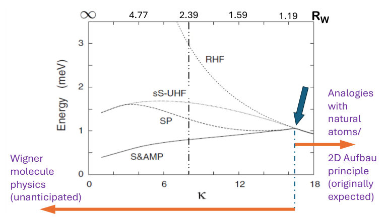
<figcaption class="paper-figure-caption"><b>Fig 2.</b> Figure 2. He-QD at vanishing magnetic field (two electrons confined in a 2D parabolic QD): Energy differences between the ground states of successive approximations and the exact one, plotted vs. κ (the dielectric constant, see the bottom horizontal axis) or RW (the Wigner parameter, see the top horizontal axis). From top to bottom, the curves correspond to the RHF, the spin and space unrestrited Hartree-Fock (sS-UHF), and two subsequent steps of symmetry restoration, i.e., the total-spin projected (SP) alone, and the combined total-spin and angular-momentum projected (S&amp;AMP) approximation. The bifurcation point between the RHF and sS-UHF curves is denoted by an arrow; it happens at RW =...</figcaption>
</figure>
<figure class="paper-figure-card">
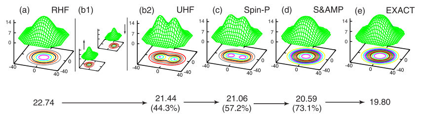
<figcaption class="paper-figure-caption"><b>Fig 3.</b> Figure 3. Successive approximations for the singlet ground state of a two-electron parabolic QD with RW = 2.39 under a vanishing magnetic field. The associated energies (in meV) are listed at the bottom. (a) Electron density of the RHF solution, exhibiting preservation of the circular symmetry of the potential confinement. The correlation energy, Ecorr = 2.94 meV, is given [see Eq. (9)] by the difference between the energy of this state and that of the exact solution [diplayed in panel (e)]. (b1) and (b2) The two occupied spin-up and spin-down space orbitals (modulus square) of the symmetry-broken “singlet” UHF solution (in b1), with the associated total electron density having a...</figcaption>
</figure>
<figure class="paper-figure-card">
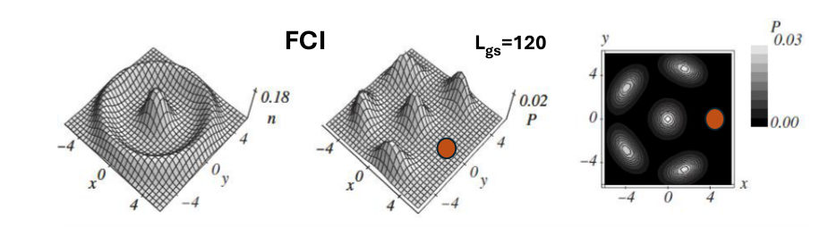
<figcaption class="paper-figure-caption"><b>Fig 4.</b> Figure 4. An example of the hidden (intrinsic) lower symmetry that can be extracted from an FCI calculation. The case portrayed is that of the ground state (with total angular momentum Lgs = 120) of N = 6 scalar bosons interacting via a repulsive Coulomb potential in a rapidly rotating trap. The many-body Hilbert space corresponds to the lowest Landau level, namely, the angular velocity Ωof the trap equals the confinement frequency ω of the trap, Ω= ω [92]. (a) The single-particle density [n(r)], (b) the corresponding CPD [P(r, r0)] [see Eq. (7)] in a 3D plot, and (c) the CPD in a contour plot. The red dots in the CPD plots indicate the reference (fixed) point r0. I note that the...</figcaption>
</figure>
<figure class="paper-figure-card">
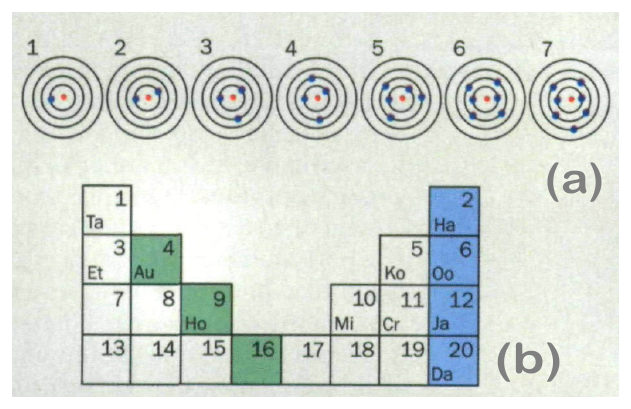
<figcaption class="paper-figure-caption"><b>Fig 5.</b> Figure 5. The Bohr-type 2D artificial atom, as conceptualized in Ref. [82]. (a) The addition of single electrons to the quantum dot can be pictured in terms of circular orbits. The first shell can contain two electrons, the second can contain four and so on. This makes it possible to formulate a periodic table for these artificial two-dimensional atoms. (b) Full shells correspond to the magic numbers N = 2, 6, 12, 20 and so on, while half-filled shells (N = 4, 9, 16, etc) correspond to maximum spin states. (The elements are named after team members from NTT and Delft.) Figure originally published in Ref. [82], Copyright (1998) by the IOP Publishing. Reused with permission. All rights...</figcaption>
</figure>
</div>

<p><strong>Summary.</strong> This review surveys the novel physics of artificial atoms formed by strongly correlated particles, known as Wigner molecules. It demonstrates how the many-body Schrödinger equation predicts emergent quantum phenomena, such as molecular-like spectra, when interparticle repulsion dominates kinetic energy. The work is highly relevant for understanding correlated electron behavior in nanoscale quantum devices and trapped quantum simulators.</p>
<p><strong>Why it may be interesting.</strong> It bridges the gap between fundamental many-body theory (MBSE) and modern experimental platforms (quantum dots, trapped atoms) to study emergent quantum behavior in strongly correlated systems.</p>
<details>
<summary>Detailed structure</summary>
<p><strong>Main problem.</strong> The paper reviews the physics of 'artificial atoms' and molecules, which are finite quantum analogs of Wigner crystals, arising from strongly interacting, confined particles.</p>
<p><strong>Main result.</strong> The physics is governed by the many-body Schrödinger equation (MBSE) in regimes of strong interparticle correlations, leading to emergent phenomena like rovibronal spectra and Wigner molecularization.</p>
<p><strong>Method.</strong> The review synthesizes theoretical calculations (e.g., FCI, symmetry projection) and discusses experimental platforms, focusing on the Wigner parameter to characterize the correlation strength.</p>
<p><strong>Model / system.</strong> The systems include 2D semiconductor/moiré quantum dots, trapped ultracold atoms/ions, and electron clusters under high magnetic fields or rotation. The underlying physics is described by the MBSE for mutually repelling confined particles.</p>
<p><strong>Key observables.</strong> Spectral energy gaps, rovibronal spectra, entanglement, and pinning effects.</p>
<p><strong>Important parameters / regimes.</strong> The Wigner parameter (RW = Potential Energy / Kinetic Energy) and external fields like magnetic field (B) and rotation ($\Omega$).</p>
<p><strong>Assumptions / limitations.</strong> The analysis develops a view of symmetry breaking based exclusively on finite systems, contrasting with the thermodynamic limit.</p>
<p><strong>Paper structure.</strong> The review progresses from general concepts of Wigner molecularization to specific computational methods (e.g., hierarchical schemes) and details results across different physical regimes (field-free, magnetic field, rotating traps).</p>
</details>
<details>
<summary>Abstract</summary>
<p>The paper reviews the theoretical and experimental progress achieved in the last 25 years in understanding the novel physics of artificial atoms and molecules as arising from the formation of Wigner molecules (WMs) of localized (to a stronger or lesser extent) fermionic or bosonic particles, which are finite quantum analogs of the more familiar bulk Wigner crystal. The term artificial atoms, as used here, encompasses a broad range of recently fabricated quantum nanodevices and experimental apparatuses consisting of a finite number of mutually repelling confined particles, including two-dimensional semiconductor and moiré transition metal dichalcogenide quantum dots, as well as trapped ultracold neutral atoms or ions. These nano-sized or micro-sized artificial devices and apparatuses (in single well or multi-well of variable-shape arrangements) hold a great promise for technological applications in the field of quantum information and quantum computers, as well as for advances in fundamental many-body physics. Prominent quantum effects of Wigner molecularization are the strong quenching of the spectral energy gaps, the appearance of rovibational spectra (in analogy with natural molecules), entanglement, and pinning due to an external perturbation. In high magnetic fields or at rapid rotation, WMs provide an alternative theory to the fractional quantum Hall effect. The physics of Wigner molecules is shown to derive from the solutions of the many-body Schrödinger equation (MBSE) in the regime of strong interparticle correlations arising from the dominance of the potential over the kinetic energy, or from a high magnetic field, as well as from a rapid rotation... (continues in the paper).</p>
</details>
<p><sub><a href="#top">↑ back to top</a></sub></p>

<p><a id="paper-2609.36541"></a></p>
<h3 id="exponential-advantage-of-quantum-over-classical-references-in-leakage-detection"><a href="http://arxiv.org/abs/2609.36541v1">Exponential Advantage of Quantum over Classical References in Leakage Detection</a></h3>
<p><strong>Authors:</strong> Zheng An<br>
<strong>Type:</strong> theory · <strong>Category:</strong> quantum information and computing · <strong>PDF:</strong> <a href="https://arxiv.org/pdf/2609.36541v1">https://arxiv.org/pdf/2609.36541v1</a><br>
<strong>Analysis basis:</strong> full PDF text, analyzed in chunks
<strong>Topic relevance:</strong> 🔥 <code>quantum measurements</code> <strong>4/5</strong></p>
<div class="figure-strip-hint">↔ Scroll figures horizontally</div>
<div class="paper-figures-scroll">
<figure class="paper-figure-card">
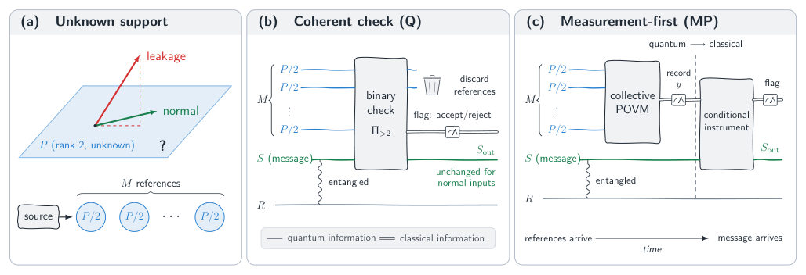
<figcaption class="paper-figure-caption"><b>Fig 1.</b> FIG. 1. Nondisturbing leakage detection with quantum references. (a) The unknown two-dimensional subspace onto which P projects (blue plane) contains normal messages (green); leakage extends outside it (red). The source supplies M references in state P/2, mutually independent and independent of the message conditional on P. (b) The quantum receiver (Q) jointly processes the references and message S with a binary instrument whose rejection projector is Π&gt;2. It returns the message Sout and an accept/reject flag, exactly preserving every normal message and its entanglement with the remote system R; the references are discarded. (c) A measure-and-process receiver (MP) performs a collective POVM...</figcaption>
</figure>
<figure class="paper-figure-card">
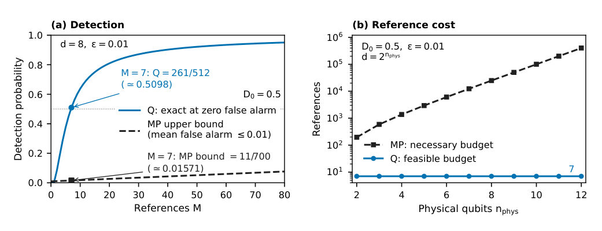
<figcaption class="paper-figure-caption"><b>Fig 2.</b> FIG. 2. Reference costs for an ideal source. (a) Optimal Q detection at zero false alarm from Eq. (4), compared with the Haar-averaged MP upper bound at d = 8, ϵ = 0.01. The latter constrains the guaranteed detection of any MP receiver satisfying the uniform task. At M = 7, Q detects with probability 261/512, whereas the MP bound is 11/700. The Q instrument also satisfies this positive tolerance. (b) At D0 = 0.5, ϵ = 0.01, seven references suffice for Q, while MP requires at least 98(d −2) for d = 2nphys. All curves are evaluated from closed-form expressions.</figcaption>
</figure>
<figure class="paper-figure-card">
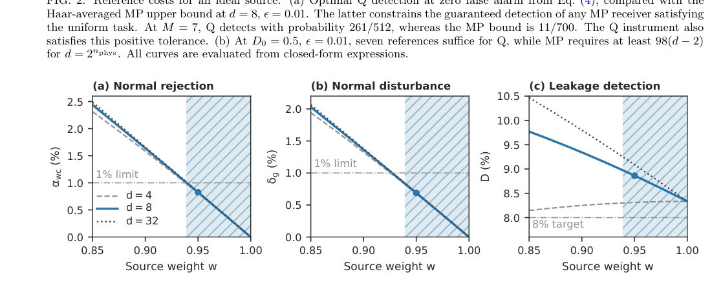
<figcaption class="paper-figure-caption"><b>Fig 3.</b> FIG. 3. Two-reference performance with source contamination. For d = 4, 8, 32, normal rejection probability, conditional disturbance of normal messages, and orthogonal-leakage detection are compared with their task thresholds. Hatching marks the feasible interval at d = 8; dots indicate w = 0.95. The source weight w = 0.95 meets αwc, δg ≤0.01 and D ≥0.08 for all d ≥4; the marked d = 8 instance has M ∗ Q ≤2 and M ∗ MP ≥84. The curves are evaluated from the channel formulas for contaminated references and ideal receiver operations.</figcaption>
</figure>
</div>

<p><strong>Summary.</strong> This paper introduces a method for detecting quantum leakage from an unknown encoding subspace using multiple independent quantum references measured coherently. It rigorously proves that this quantum approach is exponentially superior to classical measurement-first protocols, especially when the encoding structure is unknown. This advances the understanding of quantum resource utilization in quantum information security and verification.</p>
<p><strong>Why it may be interesting.</strong> The focus on quantum reference measurements to overcome the need for classical knowledge of the encoding subspace is highly relevant to quantum error correction and quantum communication protocols where full state tomography or classical description is impossible.</p>
<details>
<summary>Detailed structure</summary>
<p><strong>Main problem.</strong> The paper addresses the challenge of detecting quantum leakage from an encoding subspace when the subspace itself is not classically specified.</p>
<p><strong>Main result.</strong> A coherent measurement using independent quantum references provides an optimal detection law with a sample advantage exponential in the number of physical qubits compared to measurement-first classical protocols.</p>
<p><strong>Method.</strong> The authors derive detection laws by comparing the performance of a coherent joint measurement (quantum) against a sequential measurement-first (classical) protocol.</p>
<p><strong>Model / system.</strong> The model involves quantum information processing where a message is encoded into a subspace, and leakage is defined as population outside this subspace. The comparison is made between coherent reference measurements and classical POVM measurements.</p>
<p><strong>Key observables.</strong> Detection probability ($D_0$), false alarm rate ($\epsilon$), miss probability, and the required number of quantum references ($M$).</p>
<p><strong>Important parameters / regimes.</strong> Number of references ($M$), ambient dimension ($d$), and tolerance ($\epsilon$).</p>
<p><strong>Assumptions / limitations.</strong> The coherent check is assumed to be optimal among all tests with zero false alarm for every encoding, and the analysis often assumes ideal reference operations or specific noise models (e.g., local Markov Pauli channels).</p>
<p><strong>Figures summary.</strong> Figures compare the required number of references ($M$) for quantum vs. measurement-first approaches, demonstrating an exponential advantage for the coherent check, and illustrate the process flow difference between the two detection methods.</p>
<p><strong>Paper structure.</strong> The paper progresses by first defining the problem of leakage detection without classical knowledge of the subspace. It then derives the optimal detection law for the coherent measurement, contrasts this with the limitations of measurement-first receivers, and quantifies the resulting exponential quantum advantage.</p>
</details>
<details>
<summary>Abstract</summary>
<p>Leakage from a known encoding subspace can be detected by projection. However, the corresponding projector is unavailable when the encoding subspace is not classically specified. Here we show how independent quantum references prepared by the same encoder enable leakage detection without a classical description of the encoding. A coherent measurement on the references and a single message leaves every state within the two-dimensional encoding subspace, including its entanglement with a remote system, exactly unchanged. We derive the exact detection law for $M$ ideal references and prove optimality among tests with zero false alarm for every encoding. For orthogonal leakage, the miss probability is asymptotic to $4/M$, independent of the ambient dimension $d$. Measuring all references first, even collectively, gives zero detection at every finite budget under the same zero-false-alarm requirement. For a fixed detection target between zero and one, the optimal measurement-first cost is $Θ(d/ε)$ at sufficiently small tolerance $ε$ on normal false alarm and conditional disturbance; a dimension-independent coherent budget suffices. For one logical qubit encoded in three physical qubits, seven coherent references achieve at least $50\%$ orthogonal-leakage detection, whereas any measurement-first receiver needs at least $588$ under the same $1\%$ normal tolerances. Quantum references thus support leakage checks without classical reconstruction, with a sample advantage exponential in the number of physical qubits.</p>
</details>
<p><sub><a href="#top">↑ back to top</a></sub></p>

<p><a id="paper-2609.36006"></a></p>
<h3 id="fast-hamiltonian-engineering-from-cut-polytope-geometry"><a href="http://arxiv.org/abs/2609.36006v1">Fast Hamiltonian engineering from cut polytope geometry</a></h3>
<p><strong>Authors:</strong> Thomas Joachim Friese, Özgün Kum, Aram W. Harrow, Martin Kliesch<br>
<strong>Type:</strong> theory · <strong>Category:</strong> quantum information and computing · <strong>PDF:</strong> <a href="https://arxiv.org/pdf/2609.36006v1">https://arxiv.org/pdf/2609.36006v1</a><br>
<strong>Analysis basis:</strong> full PDF text, analyzed in chunks
<strong>Topic relevance:</strong> 🔥 <code>analog quantum simulation</code> <strong>4/5</strong></p>
<div class="figure-strip-hint">↔ Scroll figures horizontally</div>
<div class="paper-figures-scroll">
<figure class="paper-figure-card">
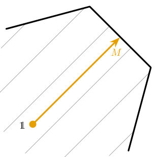
<figcaption class="paper-figure-caption"><b>Fig 1.</b> Figure 1: Visualization of the solution ray and the cut polytope. All solutions lie on the intersection of the ray originating from 1, going in the direction M, and CUTn k. Better solutions lie further along the ray. The optimum is where the ray meets the boundary of CUTn k.</figcaption>
</figure>
<figure class="paper-figure-card">
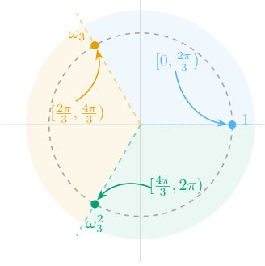
<figcaption class="paper-figure-caption"><b>Fig 2.</b> Figure 2: A possible projection onto the k-th roots of unity. The complex plane is cut from the origin into k equiangular sections. In counterclockwise direction, each section is assigned a k-th root of unity. Rotating the sections around the origin yields rounding functions with equivalent distributions.</figcaption>
</figure>
<figure class="paper-figure-card">
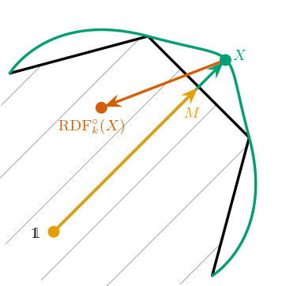
<figcaption class="paper-figure-caption"><b>Fig 3.</b> Figure 3: Intuitively, one might try to solve the elliptope relaxation of the solution ray directly. Then the rounding distortion would, however, introduce a systematic devia- tion away from the ray, leading to an ineffective selection of pulses.</figcaption>
</figure>
<figure class="paper-figure-card">
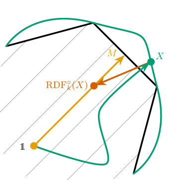
<figcaption class="paper-figure-caption"><b>Fig 4.</b> Figure 4: Instead of optimizing the relaxed solution ray directly, we can bend it by the inverse of the distortion function RDF◦−1 k . Then, in the rounding stage the sam- pled pulses will average out back onto the solution ray. This fully prevents the systematic deviation observed be- fore.</figcaption>
</figure>
<figure class="paper-figure-card">
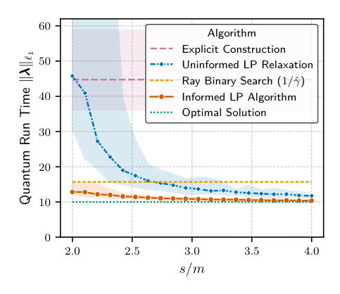
<figcaption class="paper-figure-caption"><b>Fig 5.</b> Figure 5: Comparison of algorithm performances on a canonical instance. The system Hamiltonian is given by an all-to-all connected Ising model on 20 qubits. The target is also an Ising-type Hamiltonian with a connec- tivity graph given by a complete bipartite graph K10,10. All couplings of both Hamiltonians are set to 1. The pulse ratio is varied over 20 equally spaced values be- tween 2.0 and 4.0. For the randomized algorithms, the data is aggregated over 50 independent runs per pulse ratio s/m. The markers indicate the median value, the shaded areas range from the minimal to the maximal attained quantum run time. Runs with an infeasible re- stricted linear program are excluded, which...</figcaption>
</figure>
</div>

<p><strong>Summary.</strong> This work presents a unified, mathematically rigorous framework for Hamiltonian Engineering, solving the problem of simulating a target quantum evolution using limited native controls. By reformulating the problem as an optimization over a polytope, the authors develop an efficient algorithm that achieves provable, near-optimal quantum run times. This establishes a powerful tool for the automatic design and programming of analog quantum simulators across various quantum systems.</p>
<p><strong>Why it may be interesting.</strong> It provides rigorous, provable guarantees for the automatic programming of analog quantum simulators by establishing a concrete, efficient optimization procedure for Hamiltonian decomposition.</p>
<details>
<summary>Detailed structure</summary>
<p><strong>Main problem.</strong> The paper addresses Hamiltonian Engineering (HE), which is the task of simulating a target quantum evolution ($H_{	ext{target}}$) using a native system Hamiltonian ($H_{	ext{native}}$) and controlled pulses.</p>
<p><strong>Main result.</strong> The authors provide a unified framework that reformulates time-optimal HE as an NP-complete polytope problem, solving it via an elliptope relaxation and yielding an approximation ratio of $O(\sqrt{m})$ for quantum run times.</p>
<p><strong>Method.</strong> The core method involves reformulating the problem as a complex $k$-cut polytope optimization, relaxing it to an elliptope, and solving the resulting Linear Program (LP) using informed and mixed pulse sets.</p>
<p><strong>Model / system.</strong> The framework is applicable to broad classes of 2-local qubit, qudit, and fermionic systems, aiming to decompose the target Hamiltonian into a sum of controlled conjugations of the native Hamiltonian.</p>
<p><strong>Key observables.</strong> Optimal Quantum Run Time, Approximation Ratio, Feasibility of the LP solution.</p>
<p><strong>Important parameters / regimes.</strong> Number of interaction terms ($m$), number of distinct phases ($k$), and the required pulse weights ($\lambda$).</p>
<p><strong>Assumptions / limitations.</strong> The initial formulation is NP-hard, necessitating relaxation to the elliptope; the mixed LP algorithm is used to guarantee feasibility against finite pulse time errors.</p>
<p><strong>Figures summary.</strong> Benchmarks are shown on a fully connected Ising model, a chiral clock model for qudits, and the fermionic Harper-Hofstadter model, demonstrating near-optimal run times.</p>
<p><strong>Paper structure.</strong> The paper introduces the HE problem, proves its NP-hardness, relaxes it to an elliptope, develops the informed and mixed LP algorithms, and concludes with benchmarks comparing the approach to state-of-the-art methods.</p>
</details>
<details>
<summary>Abstract</summary>
<p>Hamiltonian engineering (HE) simulates quantum dynamics under a target Hamiltonian using a native entangling system Hamiltonian and restricted control, with applications from quantum gate design to analog quantum simulation. Observing that, for many systems, formulating HE as a linear program only requires specific commutation relations between the control pulses and the system Hamiltonian, we provide a unified framework for broad classes of $2$-local qubit, qudit, and fermionic systems. We reformulate time-optimal HE as a complex $k$-cut polytope problem, with $k$ the number of distinct phases in these commutation relations, and prove it NP-complete for every finite $k$. We therefore relax the polytope to the elliptope and apply a Krivine-type rounding, yielding pulses informed by the system and target Hamiltonians, which we then use in a linear program. We derive how many informed pulses are necessary and sufficient for the linear program to be reliably feasible. Additionally mixing in uniformly sampled pulses guarantees a solution close to the relaxation value from $\mathrm{O}(m)$ pulses, with $m$ the number of interaction terms. Together with upper and lower bounds on the optimal quantum run time, this yields an $\mathrm{O}(\sqrt{m})$ approximation ratio. In benchmarks on a fully connected Ising model, a chiral clock model for qudits, and the fermionic Harper-Hofstadter model, our approach attains near-optimal quantum run times wherever the optimum is computable, reaches run times that saturate with the lattice size in the fermionic case, and outperforms state-of-the-art methods with $\mathrm{O}(m)$ pulses. This establishes a unified approach with provable guarantees to the automatic programming of analog quantum simulators.</p>
</details>
<p><sub><a href="#top">↑ back to top</a></sub></p>

<p><a id="paper-2609.36554"></a></p>
<h3 id="multicomponent-anyons-in-one-dimensional-optical-lattices"><a href="http://arxiv.org/abs/2609.36554v1">Multicomponent anyons in one-dimensional optical lattices</a></h3>
<p><strong>Authors:</strong> Sagarika Basak, Xi-Wen Guan, Han Pu<br>
<strong>Type:</strong> theory · <strong>Category:</strong> quantum gases · <strong>PDF:</strong> <a href="https://arxiv.org/pdf/2609.36554v1">https://arxiv.org/pdf/2609.36554v1</a><br>
<strong>Analysis basis:</strong> full PDF text, analyzed in chunks
<strong>Topic relevance:</strong> 🔥 <code>analog quantum simulation</code> <strong>4/5</strong></p>
<div class="figure-strip-hint">↔ Scroll figures horizontally</div>
<div class="paper-figures-scroll">
<figure class="paper-figure-card">
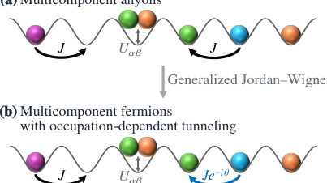
<figcaption class="paper-figure-caption"><b>Fig 1.</b> Figure 1. Fermionic representation of multicomponent anyons. (a) Nearest-neighbor tunneling with amplitude 𝐽at on-site intercom- ponent interaction 𝑈𝛼𝛽. Colors denote the 𝑁internal components. (b) The generalized Jordan–Wigner transformation maps the anyons onto multicomponent fermions with direction- and occupation- dependent Peierls-type tunneling 𝐽exp∓𝑖𝜃𝑛𝑖 .</figcaption>
</figure>
<figure class="paper-figure-card">
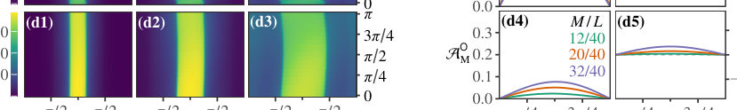
<figcaption class="paper-figure-caption"><b>Fig 2.</b> Figure 2. Fractional statistics leaves distinct signatures in intrinsic anyonic and observable physical-fermion momentum distributions. Intrinsic anyonic momentum distribution 𝑛𝑘for (a) weak interaction (𝑈= 𝐽) and (c) strong interaction (𝑈= 20𝐽), and corresponding observable physical-fermion momentum distribution 𝑛O 𝑘in (b) and (d). The first three columns show lattice fillings 𝑀/𝐿∈{12/40, 20/40, 32/40}, respectively, for 21 equally spaced statistical phases 𝜃∈{0, 0.05𝜋, . . . , 𝜋}. All panels show 𝑁= 2 components. Fractional exchange statistics breaks the 𝑘↔−𝑘symmetry and redistributes spectral weight; inversion symmetry is restored at fermionic (𝜃= 0) and pseudobosonic (𝜃= 𝜋) limits. The...</figcaption>
</figure>
<figure class="paper-figure-card">
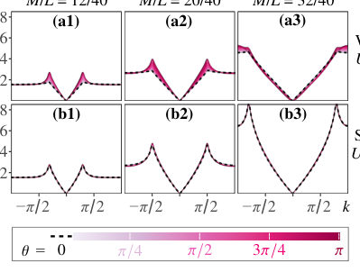
<figcaption class="paper-figure-caption"><b>Fig 3.</b> Figure 3. Spinor anyons retain antiferromagnetic ordering across the full range of fractional exchange statistics. Structure fac- tor 𝑆(𝑘) obtained from the two-body diagonal spin correlations of two-component anyons [Eq. (10)]. Columns show lattice fillings 𝑀/𝐿∈{12/40, 20/40, 32/40}; rows show (a) weak interaction (𝑈= 𝐽) and (b) strong interaction (𝑈= 20𝐽). The 21 curves span statistical phases 𝜃/𝜋∈{0, 0.05, . . . , 1}: (black dotted) for the fermionic limit 𝜃= 0 and progressively darker solid curves for in- creasing 𝜃. The minimum at 𝑘= 0, approximately linear increase at small |𝑘|, and cusps near 𝑘≃±2𝑘F are characteristic of anti- ferromagnetic spin ordering in Eq. (10). The 𝜃dependence...</figcaption>
</figure>
<figure class="paper-figure-card">
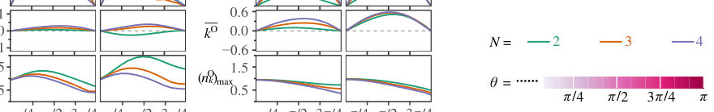
<figcaption class="paper-figure-caption"><b>Fig 4.</b> Figure 4. Additional spin components amplify the statistics-dependent momentum reconstruction. Shown are the (upper left) intrinsic anyonic momentum distribution 𝑛𝑘, (upper middle) observable physical-fermion momentum distribution 𝑛O 𝑘, and (upper right) spin structure factor 𝑆(𝑘) at weak interaction (𝑈= 𝐽). Rows show component number 𝑁∈{2, 3, 4}; alternating columns show fixed population per component 𝑀/𝑁= 6 and fixed total population 𝑀= 36. The 13 curves span statistical phases 𝜃∈{0, 𝜋/12, 𝜋/6, 𝜋/4, . . . , 𝜋}: (black dotted) for the fermionic limit 𝜃= 0 and progressively darker solid curves for increasing 𝜃. The lower block shows the (top row) mirror asymmetries AM and AO M, (middle row)...</figcaption>
</figure>
<figure class="paper-figure-card">
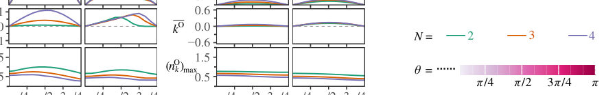
<figcaption class="paper-figure-caption"><b>Fig 5.</b> Figure 5. Strong interactions separate intrinsic anyonic signatures from physical-fermion observables’. As in Fig. 4, except at strong interaction 𝑈= 20𝐽. The intrinsic anyonic momentum distribution 𝑛𝑘retains substantial dependence on the statistical phase through the nonlocal anyonic string in its defining operator, while the corresponding statistics-dependent signatures in the observable physical-fermion momentum distribution 𝑛O 𝑘are strongly suppressed. This suppression is reflected in the small values of both AO M and ¯𝑘O across 𝑁. The spin structure factor 𝑆(𝑘) likewise remains nearly insensitive to 𝜃and retains the characteristic antiferromagnetic form.</figcaption>
</figure>
</div>

<p><strong>Summary.</strong> This paper theoretically explores how multicomponent anyons behave in 1D optical lattices, using the Anyon-Hubbard model. By varying the fractional exchange statistics, the authors show that charge and spin correlations are profoundly altered, leading to novel spectral features and tunable magnetic ordering. The findings establish the statistical phase as a key control knob for both ground-state structure and dynamic behavior.</p>
<p><strong>Why it may be interesting.</strong> This work directly addresses the physics of strongly correlated quantum gases using anyonic statistics, which is a major frontier in ultracold atom research, especially concerning spin and charge correlations.</p>
<details>
<summary>Detailed structure</summary>
<p><strong>Main problem.</strong> The study investigates the ground-state and dynamical properties of multicomponent interacting anyons confined within a one-dimensional optical lattice.</p>
<p><strong>Main result.</strong> The combination of multicomponent effects and fractional exchange statistics significantly reshapes charge and spin correlations, leading to emergent asymmetry and tunable magnetic ordering.</p>
<p><strong>Method.</strong> The analysis uses theoretical mapping to a generalized Anyon-Hubbard model, employing techniques like Jordan-Wigner transformations and DMRG simulations.</p>
<p><strong>Model / system.</strong> The system models multicomponent anyons interacting in a 1D optical lattice, governed by an Anyon-Hubbard Hamiltonian. The statistics are controlled by a fractional statistical phase parameter, $ heta$.</p>
<p><strong>Key observables.</strong> Charge and spin correlations, momentum distribution ($\hat{n}_k$), spin structure factor ($S(k)$), and dipole oscillation dynamics.</p>
<p><strong>Important parameters / regimes.</strong> Interaction strength ($U$), anyonic statistical parameter ($    heta$), and lattice site occupancy.</p>
<p><strong>Assumptions / limitations.</strong> The analysis is restricted to one-dimensional systems, and the mapping assumes anticommutation on the same site.</p>
<p><strong>Figures summary.</strong> Figures illustrate the fermionic representation of the anyon system and compare intrinsic anyonic momentum distributions ($\hat{n}_k$) with observable physical-fermion distributions ($\hat{n}_O^k$).</p>
<p><strong>Paper structure.</strong> The paper progresses by defining the model and mapping it to a fermionic description, analyzing ground-state correlations (charge/spin) across different statistical regimes, and finally examining quench dynamics to show the tunability of the system's response.</p>
</details>
<details>
<summary>Abstract</summary>
<p>We investigate the ground-state and dynamical properties of multicomponent interacting anyons confined in a one-dimensional (1D) optical lattice. Adopting the Anyon--Hubbard model, we explore spin and charge correlations as functions of interaction strength and the anyonic statistical parameter. Our results demonstrate that multicomponent effects combined with fractional exchange statistics substantially reshape both charge and spin correlations. For fractional exchange statistics, the canonical symmetric shell structure with prominent singularities in the spinor fermionic momentum distribution undergoes notable structural reconstruction, exhibiting emergent asymmetry, new spectral peaks, and broadened singular features. Unlike the Tonks--Girardeau bosonic gas, pseudobosons, representing a limiting case of anyons, cease to display a dominant zero-momentum peak. Instead, a quasi-fermionic shell structure emerges with finite-momentum peaks, whose locations are modulated by lattice site occupancy and interaction strength. The structure factor of spin correlations uncovers antiferromagnetic ordering in spinor anyon systems, with correlation magnitudes tunable by anyonic exchange statistics. Furthermore, quench dynamics analysis reveals the statistical phase parameter as an effective tuning knob. It enables the switching of dipole oscillations between underdamped and overdamped relaxation regimes and governs overall cloud expansion dynamics. Our findings pave the way for exploring statistics-driven ground-state and dynamical phase transitions in spinor anyon systems.</p>
</details>
<p><sub><a href="#top">↑ back to top</a></sub></p>

<p><a id="paper-2609.36711"></a></p>
<h3 id="quantum-states-and-spectra-of-small-cylindrical-and-toroidal-lattices"><a href="http://arxiv.org/abs/2609.36711v1">Quantum States and Spectra of Small Cylindrical and Toroidal Lattices</a></h3>
<p><strong>Authors:</strong> Caelan Brooks, Kunal K. Das<br>
<strong>Type:</strong> theory · <strong>Category:</strong> other · <strong>PDF:</strong> <a href="https://arxiv.org/pdf/2609.36711v1">https://arxiv.org/pdf/2609.36711v1</a><br>
<strong>Analysis basis:</strong> full PDF text, analyzed in chunks
<strong>Topic relevance:</strong> 🔥 <code>analog quantum simulation</code> <strong>4/5</strong></p>
<div class="figure-strip-hint">↔ Scroll figures horizontally</div>
<div class="paper-figures-scroll">
<figure class="paper-figure-card">
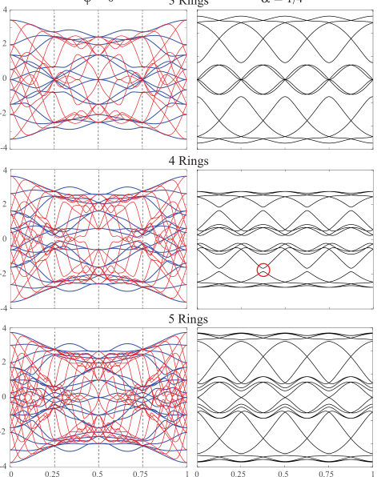
<figcaption class="paper-figure-caption"><b>Fig 1.</b> FIG. 2. (Color online) The periodic boundary condition of a cylindrical lattice breaks the gauge equivalence illustrated for the two Landau gauges x (thin red line) and y (thick blue line) for a 4 × 4 cylindrical lattice. The left panels show that they match at specific values of the field where M × α = k, a natural number, irrespective of the number of sites N in the axial direction. The right panels illustrate that at those values, here shown for α = 1/4, the spectrum is the same for both gauges as a function of a phase ϕ representing an added axial field. When N = M, gaps open in the lines that mark edge states of the bands; one is marked by a red circle.</figcaption>
</figure>
<figure class="paper-figure-card">
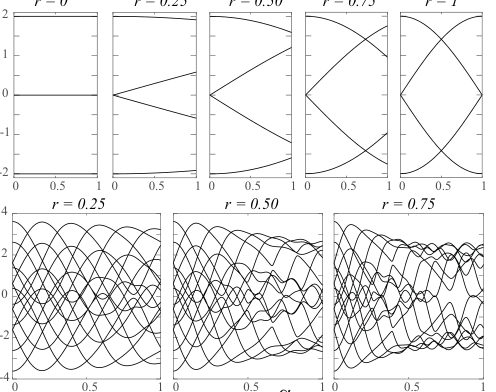
<figcaption class="paper-figure-caption"><b>Fig 2.</b> FIG. 4. (Color online) The origin of the butterfly shape is shown with the gauge dependence varying from f(n) = −nr, with r ∈[0, 1]. Upper panels show for 2 × 2 and lower for 4 × 4 cylindrical lattice.</figcaption>
</figure>
<figure class="paper-figure-card">
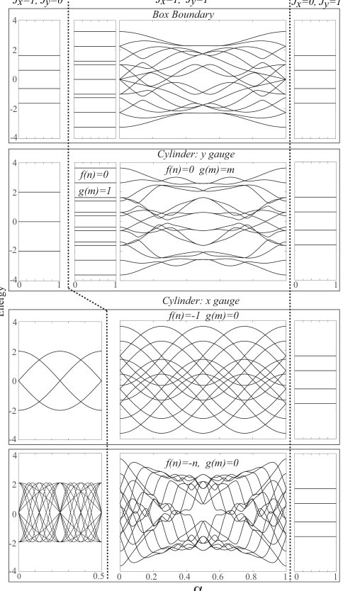
<figcaption class="paper-figure-caption"><b>Fig 3.</b> FIG. 3. (Color online) The spectrum of a 4 × 4 cylindri- cal lattice showing effects of boundary conditions, gauge and coupling: The three columns separated by dotted lines show: (Left) isolated rings Jx = 1, Jy = 0,(Right) isolated strips Jx = 0, Jy = 1, and (Center) the critical case Jx = 1, Jy = 1. The four rows display: (First) box boundary condition insen- sitive to the gauge; (Second) Landau y gauge comparing in the center column the effects of g(m) = 1 with g(m) = m, as in the gauge factor being independent/dependent on the lattice index; (Third) Landau x gauge showing that the spectrum depends on the field α even when the gauge factor f(n) = −1 has no dependence on the lattice index....</figcaption>
</figure>
<figure class="paper-figure-card">
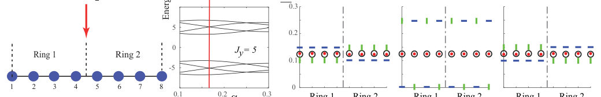
<figcaption class="paper-figure-caption"><b>Fig 4.</b> FIG. 5. (Color online) The schematic uses a 2 × 4 cylindrical lattice with f(n) = −n, g(m) = 0 to illustrate how we plot the eigenstates, by mapping the 2D lattice sites to a 1D sequence. The spectra shown at Jx = 1 for two separate inter-ring coupling Jy trace avoided crossings (solid blue circles), intersections that slide by (dotted green circles) and persistent degeneracies (solid red dots, also tracked with vertical red line). The lowest four eigenstates are shown at α = 1/6 and its neighborhood, where avoided crossings and persistent degeneracies are both present. In this and other plots we will use the legend having increasing energy (black circles, blue horizontal bar, green...</figcaption>
</figure>
<figure class="paper-figure-card">
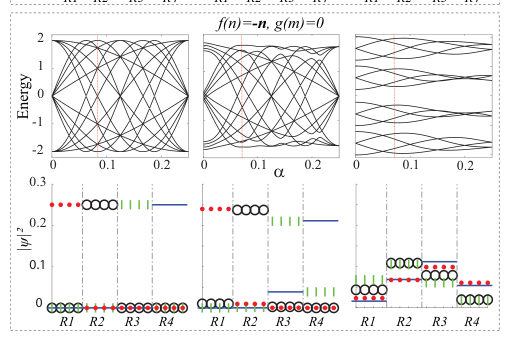
<figcaption class="paper-figure-caption"><b>Fig 5.</b> FIG. 6. (Color online) The effect of the phase variation among the rings is shown by contrasting the case of f(n) = −1 (top rows) with f(n) = −n bottom rows. (Row 1) As the inter-ring coupling is increased from the left to right, for f(n) = −1, the degeneracies are lifted independent of α, and the spectral lines separate uniformly. (Row 3) For f(n) = −n the relative phase between the rings causes strong dependence on α, causing gaps to open up at specific values leading to avoided crossings. (Row 2) In the absence of phase difference between rings, even a small coupling Jy causes the eigenstates to mix; (Row 4) the phase difference resists mixing, which occurs selectively around avoided...</figcaption>
</figure>
</div>

<p><strong>Summary.</strong> This paper theoretically analyzes the quantum energy spectrum of small 2D lattices with cylindrical and toroidal boundaries under the influence of a position-dependent gauge field. It demonstrates that finite size effects break gauge symmetries, leading to distinct spectral features like edge state gaps in cylinders and a localization transition in tori. The findings are crucial for understanding topological phenomena in engineered quantum simulators.</p>
<p><strong>Why it may be interesting.</strong> This work directly addresses the topological physics of constrained geometries, which is highly relevant for understanding synthetic gauge fields realized in ultracold atoms and quantum simulators.</p>
<details>
<summary>Detailed structure</summary>
<p><strong>Main problem.</strong> The study investigates the quantum spectrum and states of small lattices with cylindrical and toroidal topologies when subjected to a position-dependent scalar gauge potential.</p>
<p><strong>Main result.</strong> The paper finds that gauge equivalence, assumed in infinite lattices, is generally lost due to periodic boundary conditions, and it identifies specific conditions that restore this equivalence. Furthermore, it characterizes edge state gaps in cylinders and a localization-delocalization transition in tori.</p>
<p><strong>Method.</strong> The authors employ a comparative theoretical analysis, examining the Hamiltonian's spectrum and eigenstates by varying gauge choices, boundary conditions, and external field parameters.</p>
<p><strong>Model / system.</strong> The model is a quantum mechanical system on a finite 2D lattice ($M 	imes N$) described by a hopping Hamiltonian incorporating gauge-dependent phases. The geometry is varied between planar, cylindrical, and toroidal topologies.</p>
<p><strong>Key observables.</strong> Energy spectrum (eigenvalues), avoided crossings, persistent degeneracies, and the presence/absence of spectral gaps associated with edge states.</p>
<p><strong>Important parameters / regimes.</strong> Gauge choice (Landau gauges), inter-site coupling strengths ($J_x, J_y$), the magnetic flux parameter ($\alpha$), and the lattice size ($M, N$).</p>
<p><strong>Assumptions / limitations.</strong> The analysis moves beyond the assumptions of infinite lattices, focusing on small lattices to highlight boundary effects. It compares results across different gauge choices.</p>
<p><strong>Figures summary.</strong> Figures illustrate the schematic boundary conditions (Box, Cylinder, Torus) and compare spectra for different Landau gauges on cylindrical lattices, showing spectral matching only when specific commensurability conditions are met.</p>
<p><strong>Paper structure.</strong> The paper follows a comparative structure, first establishing the Hamiltonian and the problem setup, then analyzing the breakdown of gauge equivalence due to finite size, and finally contrasting the spectral features observed in cylindrical versus toroidal geometries.</p>
</details>
<details>
<summary>Abstract</summary>
<p>We examine the spectrum and quantum states of small lattices with cylindrical and toroidal topology subject to a scalar gauge potential that introduces a position dependent phase in the inter-site coupling. Equivalency of gauges assumed in infinite lattices is generally lost due to the periodic boundary conditions, and conditions that restore it are identified. We trace the impact of various system parameters including gauge choice, boundary conditions and inter-site coupling strengths, and an additional axial field. We find gauge dependent appearance of avoided crossings and persistent degeneracies, and we show their impact on the associated eigenstates. Smaller lattices develop prominent gaps in spectral lines associated with edge states, which are suppressed in the thermodynamic limit. Toroidal lattices have counterparts of most of the features observed in cylindrical lattices, but notably they display a transition from localization to delocalization determined by the relation between the field parameter and the number of lattice sites.</p>
</details>
<p><sub><a href="#top">↑ back to top</a></sub></p>

<p><a id="paper-2609.38168"></a></p>
<h3 id="when-classical-correlations-certify-entanglement-recovery"><a href="http://arxiv.org/abs/2609.38168v1">When Classical Correlations Certify Entanglement Recovery</a></h3>
<p><strong>Authors:</strong> Takeru Utsumi, Yota Tachibana, Yoshifumi Nakata, Takaya Matsuura, Ryuji Takagi, Francesco Buscemi, Masato Koashi<br>
<strong>Type:</strong> theory · <strong>Category:</strong> quantum information and computing · <strong>PDF:</strong> <a href="https://arxiv.org/pdf/2609.38168v1">https://arxiv.org/pdf/2609.38168v1</a><br>
<strong>Analysis basis:</strong> full PDF text, analyzed in chunks
<strong>Topic relevance:</strong> 🔥 <code>quantum measurements</code> <strong>4/5</strong></p>
<div class="figure-strip-hint">↔ Scroll figures horizontally</div>
<div class="paper-figures-scroll">
<figure class="paper-figure-card">
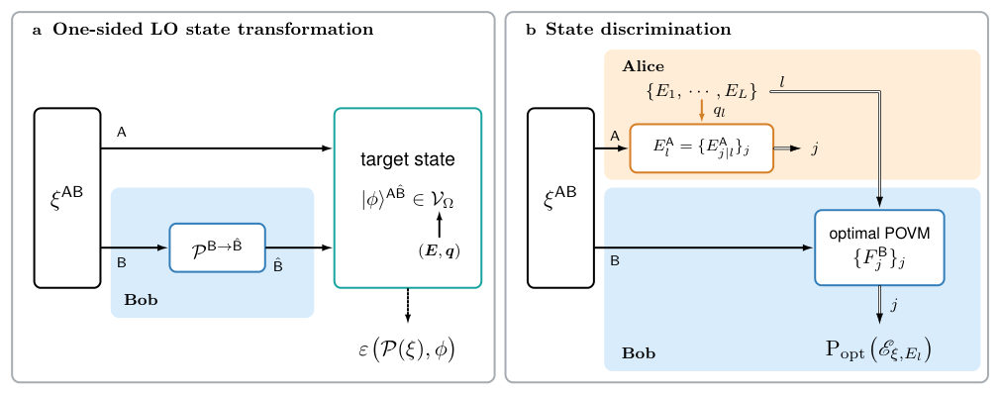
<figcaption class="paper-figure-caption"><b>Fig 1.</b> FIG. 1. The two tasks on a shared state ξAB connected by Theorem 1. a, In the one-sided LO state-transformation task, Bob applies a channel PB→ˆB and compares the resulting state with a target state |ϕ⟩AˆB ∈VΩ. b, In the state-discrimination task, Alice chooses a POVM EA l with probability ql, shares l with Bob, and Bob performs an optimal POVM to guess Alice’s outcome j. Here, VΩin a is determined by the family of Alice’s POVMs E and the probability distribution q used in b.</figcaption>
</figure>
<figure class="paper-figure-card">
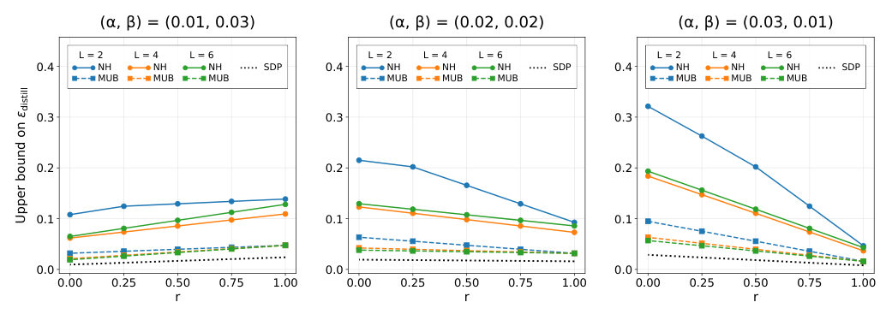
<figcaption class="paper-figure-caption"><b>Fig 2.</b> FIG. 2. Error bounds for εdistill on distilling an MES from the noisy state N A′→B(ΦAA′), where the noise N A′→B is a probabilistic mixture of depolarizing and dephasing channels with noise parameters α and β, respectively. The mixing probabilities of the former and latter channels are 1 −r and r, respectively. We set d = 5. Dashed and solid lines correspond to MUB-based measurements and neighboring-level Hadamard (NH)-based measurements, respectively. In both cases, L denotes the number of measurement bases, optimized over the choice of L MUB- or NH-based bases. As a benchmark, we also show, with the black dotted lines, the error εdistill achieved by the optimal local operation on Bob’s...</figcaption>
</figure>
<figure class="paper-figure-card">
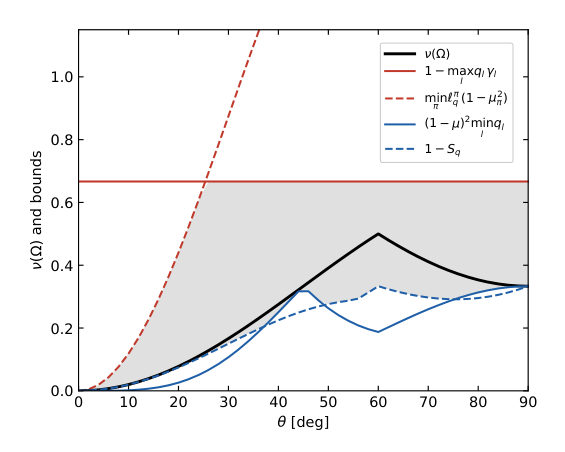
<figcaption class="paper-figure-caption"><b>Fig 3.</b> FIG. 3. The exact spectral gap ν(Ω) (black) and the bounds of Eq. (S83) (red and blue) for the three bases {E1, EF 1 (θ), EF 2 (θ)} with d = 5 and ql = 1/3 are plotted against θ. The shaded region is the interval certified by the bounds. The two θ-Fourier bases both coincide with the computational basis E1 at θ = 0, where the underlying Hilbert space is reducible, and every bound involving µπ vanishes. At θ = 90◦, the θ-Fourier bases coincide with each other, and only two distinct bases remain, namely E1 with weight 1/3 and the Fourier basis with weight 2/3.</figcaption>
</figure>
<figure class="paper-figure-card">
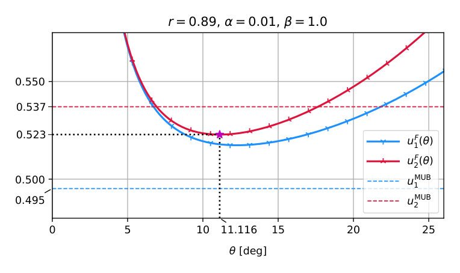
<figcaption class="paper-figure-caption"><b>Fig 4.</b> FIG. 4. The upper bounds u1 in Eq. (S179) (blue) and u2 in Eq. (S180) (red) are plotted for the θ-Fourier basis pair (solid) and the Y -axis-rotated MUB pair (dash-dotted) in the single-qubit case (d = 2). We set the noisy state to ξAB = N A′→B r (|Φ⟩⟨Φ|AA′) with r = 0.89, α = 0.01, and β = 1.0. The θ-Fourier basis pair gives a lower u2 than the Y -axis-rotated MUB pair for θ ∈(6.9◦, 17.6◦), while the latter is always superior for u1.</figcaption>
</figure>
<figure class="paper-figure-card">
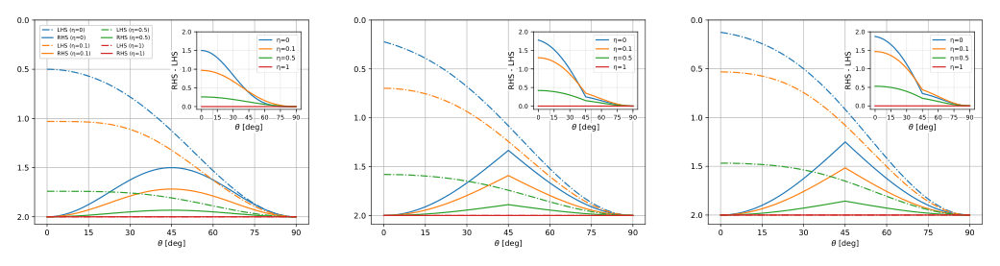
<figcaption class="paper-figure-caption"><b>Fig 5.</b> FIG. 5. The left- and right-hand sides of Eq. (S237) (dash-dotted and solid, respectively) are plotted for several values of the measurement unsharpness parameter η, with θ on the horizontal axis. Note that smaller values on the left-hand side indicate larger disturbance, while, for a fixed pair of observables, smaller values on the right-hand side indicate larger information gain; thus, the vertical axis is inverted. The inset plots the difference between the right-hand side and the left-hand side.</figcaption>
</figure>
</div>

<p><strong>Summary.</strong> This paper develops a general mathematical framework showing that entanglement can be quantitatively certified by measuring classical distinguishability, provided the measurements satisfy an 'irreducibility' condition instead of the stricter complementarity requirement. This breakthrough unifies key areas of quantum information theory, including entanglement distillation and Quantum Error Correction. It offers a robust method to estimate quantum resource limitations using only local, accessible measurements.</p>
<p><strong>Why it may be interesting.</strong> It provides a powerful, generalized mathematical tool (irreducibility) to connect fundamental concepts like entanglement and distinguishability, which is crucial for understanding the limits of quantum information processing.</p>
<details>
<summary>Detailed structure</summary>
<p><strong>Main problem.</strong> To establish a general, quantitative correspondence between quantum correlations (entanglement) and classical distinguishability of measurement outcomes, extending beyond the requirement of complementarity.</p>
<p><strong>Main result.</strong> The connection can be established using the weaker condition of 'irreducibility' induced by measurements, providing a unified framework for entanglement distillation, QEC, and measurement trade-offs.</p>
<p><strong>Method.</strong> The authors derive quantitative bounds by relating the infidelity of local state transformation to the failure probability in state discrimination using operator norms and spectral gaps.</p>
<p><strong>Model / system.</strong> The analysis focuses on a bipartite quantum state $\xi_{AB}$ shared between two parties, involving local operations (LO) and general Positive Operator-Valued Measures (POVMs).</p>
<p><strong>Key observables.</strong> Infidelity of one-sided LO transformation into a maximally entangled state (MES); Failure probability in state discrimination.</p>
<p><strong>Important parameters / regimes.</strong> The condition of 'irreducibility' induced by the POVMs; the dimension $d$ of the system.</p>
<p><strong>Assumptions / limitations.</strong> The results apply to general POVMs satisfying the irreducibility condition, relaxing the need for complementarity.</p>
<p><strong>Figures summary.</strong> Figure 1 illustrates the two connected tasks: (a) one-sided LO state-transformation and (b) state-discrimination, showing how the errors are related.</p>
<p><strong>Paper structure.</strong> The paper first establishes the quantitative link between the two error measures using the irreducibility condition, then derives specific bounds relating these errors, and finally extends this framework to unify entanglement distillation, QEC, and measurement trade-offs.</p>
</details>
<details>
<summary>Abstract</summary>
<p>Entanglement and state distinguishability have long been central topics in quantum foundations. While each has developed into a rich subject in its own right, they can be connected through measurements in complementary bases. This connection provides insights into quantum and classical correlations and underlies many information-processing tasks, most notably quantum error correction (QEC). However, it has remained largely open whether the connection between entanglement and distinguishability extends to general measurements without assuming complementarity. We answer this question in the affirmative: the key is irreducibility induced by measurements, a much more relaxed condition than complementarity. Specifically, for POVMs satisfying an irreducibility condition, we establish a quantitative relation between the infidelity of one-sided local transformation into a maximally entangled state and the failure probability in state discrimination. We then characterize when both errors can vanish simultaneously. Our results have direct applications to entanglement distillation and QEC. Their errors can be certified by estimating classical input-output correlations from experimentally accessible local measurements, without requiring complementarity. The results also extend to quantum measurement theory. We derive novel trade-off relations that bridge two historically distinct approaches: information gain--irreversibility and observable noise--disturbance. Our connection between entanglement and distinguishability via irreducibility thus offers a common framework for entanglement distillation, QEC, and measurement trade-offs.</p>
</details>
<p><sub><a href="#top">↑ back to top</a></sub></p>

<p><a id="paper-2609.37142"></a></p>
<h3 id="second-order-coherence-properties-of-ultrafast-polariton-dynamics-in-plasmonic-lattices"><a href="http://arxiv.org/abs/2609.37142v1">Second-order coherence properties of ultrafast polariton dynamics in plasmonic lattices</a></h3>
<p><strong>Authors:</strong> Evgeny A. Mamonov, Lukas Freter, Sioneh Eyvazi, Elliot W. Lloyd, Päivi Törmä<br>
<strong>Type:</strong> both · <strong>Category:</strong> other · <strong>PDF:</strong> <a href="https://arxiv.org/pdf/2609.37142v1">https://arxiv.org/pdf/2609.37142v1</a><br>
<strong>Analysis basis:</strong> full PDF text, analyzed in chunks
<strong>Topic relevance:</strong> <code>Dicke superradiance</code> <strong>3/5</strong> · <code>Tavis-Cummings &amp; cavity-many-emitter</code> <strong>3/5</strong> · <code>analog quantum simulation</code> <strong>3/5</strong> · <code>driven-dissipative phase transition</code> <strong>3/5</strong> · <code>methods for driven-dissipative</code> <strong>3/5</strong> · <code>quantum measurements</code> <strong>3/5</strong> · <code>quantum optics experiment</code> <strong>3/5</strong> · <code>superradiant laser</code> <strong>3/5</strong> · <code>correlated / nonlocal dissipation</code> <strong>2/5</strong> · <code>non-equilibrium universality</code> <strong>2/5</strong> · <code>Full counting statistics</code> <strong>1/5</strong> · <code>Keldysh / 2PI / non-Gaussian methods</code> <strong>1/5</strong> · <code>interference shaping light</code> <strong>1/5</strong> · <code>scars &amp; prethermalization</code> <strong>1/5</strong></p>
<div class="figure-strip-hint">↔ Scroll figures horizontally</div>
<div class="paper-figures-scroll">
<figure class="paper-figure-card">
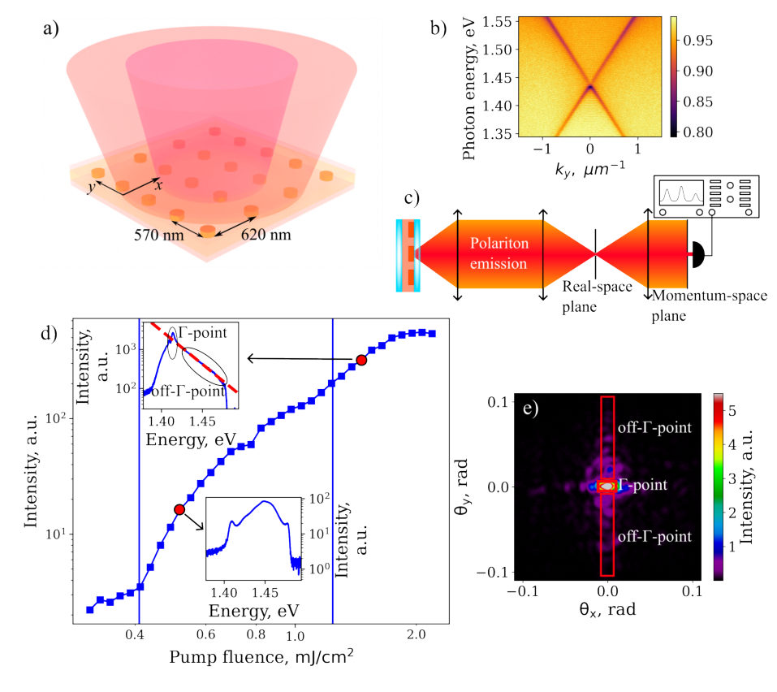
<figcaption class="paper-figure-caption"><b>Fig 1.</b> FIG. 1. a) Schematic of the studied structure with the coordinate frame and lattice periodic-</figcaption>
</figure>
<figure class="paper-figure-card">
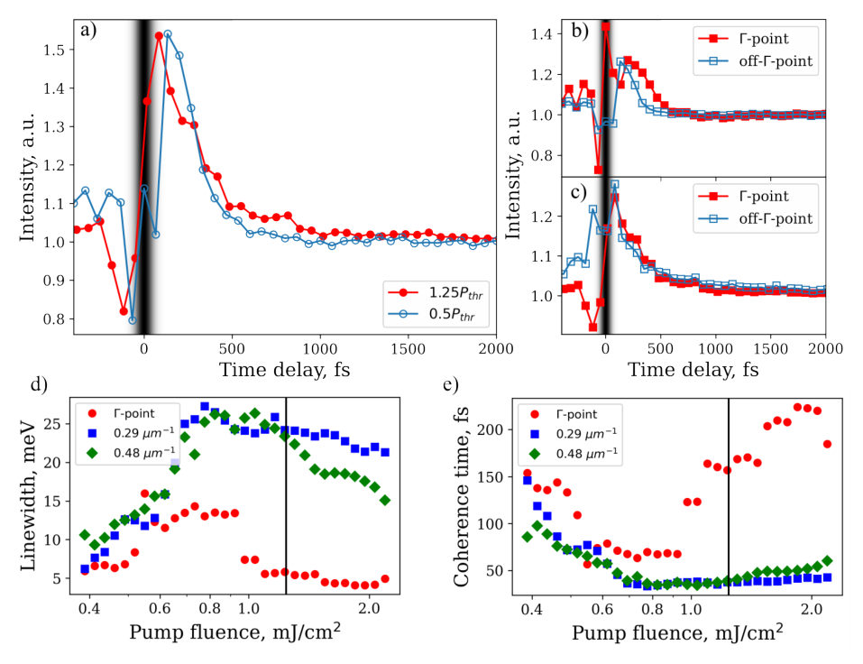
<figcaption class="paper-figure-caption"><b>Fig 2.</b> FIG. 2. a)-c) Typical time profile of the polariton emission, black area denotes the pump and</figcaption>
</figure>
<figure class="paper-figure-card">
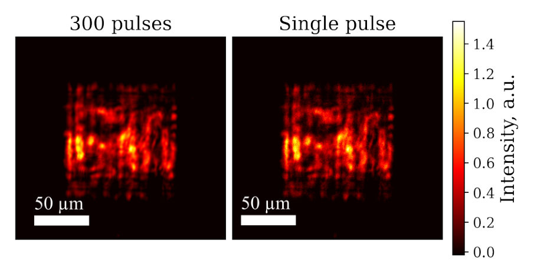
<figcaption class="paper-figure-caption"><b>Fig 3.</b> FIG. 3. Averaged (left) and single-shot (right) real-space polariton emission patterns at the pump</figcaption>
</figure>
<figure class="paper-figure-card">
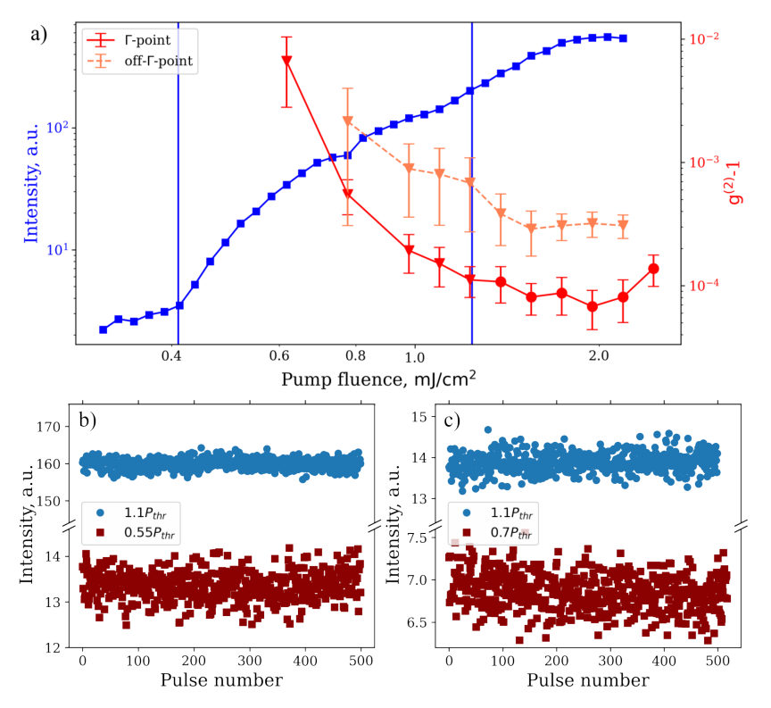
<figcaption class="paper-figure-caption"><b>Fig 4.</b> FIG. 4. a) The g(2)(0) dependence on pump fluence for Γ-point (red curve) and non-Γ-point</figcaption>
</figure>
<figure class="paper-figure-card">
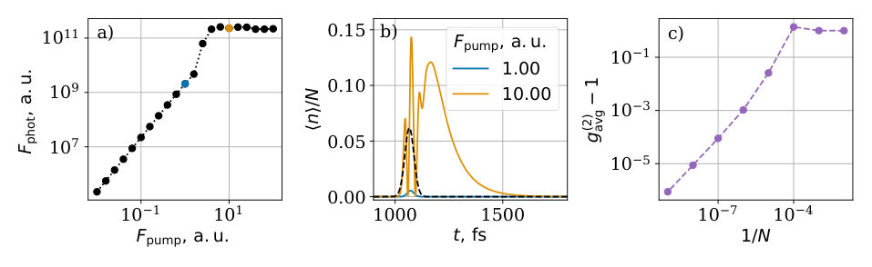
<figcaption class="paper-figure-caption"><b>Fig 5.</b> FIG. 5. Numerical simulations of the photon emission. a) Photon fluence as a function of pump</figcaption>
</figure>
</div>

<p><strong>Summary.</strong> This paper experimentally and theoretically investigates the second-order coherence of ultrafast polariton emission in plasmonic lattices. The authors report observing near-perfect coherence and rapid dynamics, suggesting the system behaves either like a highly coherent Bose-Einstein condensate or a superradiant source. This work advances the understanding of emission statistics in engineered quantum light-matter interfaces.</p>
<p><strong>Why it may be interesting.</strong> This work bridges quantum optics, condensed matter physics, and AMO physics by applying coherence measurements to engineered light-matter systems (polaritons), providing insights into non-equilibrium quantum statistics beyond simple BEC models.</p>
<details>
<summary>Detailed structure</summary>
<p><strong>Main problem.</strong> The study investigates the second-order coherence properties of ultrafast polariton dynamics within plasmonic lattices, contrasting with the well-understood first-order coherence.</p>
<p><strong>Main result.</strong> The authors observed a high degree of coherence ($g^{(2)}(	au=0)-1 < 10^{-4}$) and demonstrated ultrafast dynamics ($>1$ THz), suggesting the process is either a BEC with ultrafast thermalization or superradiance.</p>
<p><strong>Method.</strong> The research combines experimental measurements of the second-order coherence function ($g^{(2)}$) using pulse-to-pulse fluctuations with theoretical modeling comparing quantum trajectories against cumulant approximations.</p>
<p><strong>Model / system.</strong> The system is polariton emission from a plasmonic lattice formed by metal nanoparticles, where the active medium is an IR-792 dye in the strong-coupling regime. The dynamics are modeled using concepts from BEC, superradiance, and coupled two-level systems.</p>
<p><strong>Key observables.</strong> Second-order coherence function ($g^{(2)}(	au=0)$), ultrafast dynamics ($>1$ THz), and emission intensity dependence on pump fluence.</p>
<p><strong>Important parameters / regimes.</strong> Strong coupling regime, $\Gamma$-point vs. non-$\Gamma$-point radiation, sub-50-fs thermalization time, and Rabi splitting ($\Omega = 200 	ext{ meV}$).</p>
<p><strong>Assumptions / limitations.</strong> The analysis compares mean-field predictions with exact quantum trajectories, and the interpretation involves modeling the system as either a BEC or a superradiant source.</p>
<p><strong>Figures summary.</strong> Figures illustrate the plasmonic lattice structure and dispersion, the measurement scheme using pulse-to-pulse fluctuations, the fluence dependence of $g^{(2)}$, and theoretical comparisons of $g^{(2)}$ using different quantum approximations.</p>
<p><strong>Paper structure.</strong> The paper establishes the need to study $g^{(2)}$ in non-equilibrium light-based condensates. It details the experimental setup and measurements, presents the key results showing high coherence and ultrafast dynamics, and concludes by discussing theoretical interpretations, including superradiance.</p>
</details>
<details>
<summary>Abstract</summary>
<p>The first-order coherence properties of strongly coupled systems supporting polariton lasing and Bose-Einstein condensation (BEC) have been thoroughly studied and show consistent results. In contrast, second-order coherence properties have been found to vary for different systems, and the second-order coherence function can deviate from the value of one, typical for atomic BEC, revealing super-Poissonian fluctuations even above the BEC/polariton lasing threshold. This calls for a deeper understanding of the emission statistics and dynamics in light-based condensates, especially in the non-equilibrium regime. Here we demonstrate a coherent state of polariton emission from a plasmonic lattice measured as the second-order coherence function value separately for $\mathrmΓ$- and non-$\mathrmΓ$-point radiation (ground state and high-energy tail). We observe a high degree of coherence with the value $g^{(2)}(τ=0)-1<10^{-4}$. We also demonstrate the ultrafast ($&gt;$1 THz) nature of the dynamics. The process can be interpreted as a BEC with ultrafast, sub-50-fs thermalization, but we also suggest an alternative explanation as superradiance in a system where the emitters have vibrational degrees of freedom.</p>
</details>
<p><sub><a href="#top">↑ back to top</a></sub></p>

<p><a id="paper-2609.37110"></a></p>
<h3 id="weakly-interacting-bose-einstein-condensate-with-stochastic-resetting"><a href="http://arxiv.org/abs/2609.37110v1">Weakly interacting Bose-Einstein condensate with stochastic resetting</a></h3>
<p><strong>Authors:</strong> Nikhil Mesquita, Manas Kulkarni, Satya N. Majumdar, Sanjib Sabhapandit<br>
<strong>Type:</strong> theory · <strong>Category:</strong> quantum gases · <strong>PDF:</strong> <a href="https://arxiv.org/pdf/2609.37110v1">https://arxiv.org/pdf/2609.37110v1</a><br>
<strong>Analysis basis:</strong> full PDF text, analyzed in chunks
<strong>Topic relevance:</strong> <code>Full counting statistics</code> <strong>3/5</strong> · <code>correlated / nonlocal dissipation</code> <strong>3/5</strong> · <code>driven-dissipative phase transition</code> <strong>3/5</strong> · <code>methods for driven-dissipative</code> <strong>3/5</strong> · <code>non-equilibrium universality</code> <strong>3/5</strong> · <code>Keldysh / 2PI / non-Gaussian methods</code> <strong>2/5</strong> · <code>analog quantum simulation</code> <strong>2/5</strong> · <code>quantum measurements</code> <strong>2/5</strong></p>
<div class="figure-strip-hint">↔ Scroll figures horizontally</div>
<div class="paper-figures-scroll">
<figure class="paper-figure-card">
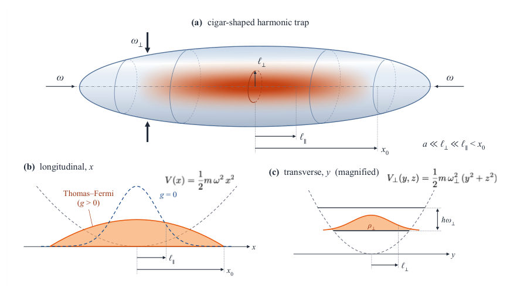
<figcaption class="paper-figure-caption"><b>Fig 1.</b> Figure 1: Schematic of the setup. (a) A gas of bosons in a cigar-shaped harmonic trap with strong transverse confinement ω⊥(thick arrows) and weak longitudinal confinement ω (thin arrows), ω⊥≫ω. The shading shows the condensate density, ∝ρTF(x) ρ⊥(r⊥). Transversely, the gas is frozen in the harmonic-oscillator ground state of width ℓ⊥. Longitudinally, the repulsive interaction stretches it to the Thomas-Fermi length x0 [Eq. (27)], which exceeds the longitudinal oscillator length ℓ∥since x0 = α C1/3ℓ∥with C ≫1 [Eq. (14)]. The oscillator lengths ℓ⊥and ℓ∥are defined in Eq. (2), and the hierarchy of length scales follows from Eqs. (4) and (14). (b) Longitudinal density: the Thomas-Fermi profile...</figcaption>
</figure>
<figure class="paper-figure-card">

<figcaption class="paper-figure-caption"><b>Fig 2.</b> Figure 2: Condensate density of weakly interacting bosons in harmonic confinement, given by the Thomas-Fermi (TF) solution of the time-independent GPE in Eq. (18). The dashed black lines are obtained by numerically solving Eq. (18) and the solid blue line is the scaled TF density R(z) ≡x0ρ(x) with z = x/x0 in Eq. (28), in (left) linear- linear scale and (right) log-linear scale. The numerical evaluation of the GPE involves the evolution of the time-dependent GPE [Eq. (30)] in imaginary time as detailed in Appendix A.1. The parameters used are N = 5 × 105, m = 0.4, ω = 0.1, g = 0.01.</figcaption>
</figure>
<figure class="paper-figure-card">

<figcaption class="paper-figure-caption"><b>Fig 3.</b> Figure 3: (Left) The plot of λ as a function of t for various values of ω. The plot is obtained by finding the roots of Eq. (41) numerically. (Right) Plot of h(λ) given in Eq. (48) for various values of r0 = r/( √</figcaption>
</figure>
<figure class="paper-figure-card">

<figcaption class="paper-figure-caption"><b>Fig 4.</b> Figure 4: Dynamics of the condensate density of weakly interacting bosons after the frequency ω is quenched to zero. (Left) the solid lines indicates the analytical plot of the scaling solution λ(t)−1 R(z/λ(t)) ≡x0ρ(x, t) with z = x/x0, given in Eq. (35) at various times t, with the parameter λ(t) implicitly defined in Eq. (41). The dashed black lines are obtained by numerically solving the time-dependent GPE [Eq. (10)] (detailed in Appendix A.2). (Right) The scaled collapsed plot of the average density profile in log- linear scale with the solid orange line plotting R(y) ≡λ(t) x0ρ(x, t) with y = x/[x0λ(t)], given in Eq. (28), and the markers obtained by numerically solving the time...</figcaption>
</figure>
<figure class="paper-figure-card">

<figcaption class="paper-figure-caption"><b>Fig 5.</b> Figure 5: NESS condensate density of weakly interacting bosons subjected to stochastic resetting as a function z = x/x0, in (left) linear-linear plot and (right) log-linear plot for x/x0 &gt; 0. The solid colored lines are obtained by simulations detailed in Appendix A.3. (Left) The dashed black line is the plot of the analytical function G(z) ≡x0ρr(x) [Eq. (53)] obtained by performing the numerical integration in Eq. (53). For comparison we also plot the initial density profile R(z) ≡x0 ρ(x) [Eq. (28)] in the dotted red line. (Right) The dashed black line plots the asymptotic form of G(z) in Eq. (60). The simulations parameters are x0 = 1, ω = 1, and various r, recalling that r0 = r/( √</figcaption>
</figure>
</div>

<p><strong>Summary.</strong> This work analyzes a weakly interacting Bose-Einstein condensate subjected to stochastic resetting, which introduces dynamically emergent correlations. The authors derive the non-equilibrium steady state properties, finding a specific density profile and exact scaling forms for particle number fluctuations. This study offers insight into how external noise can fundamentally alter the many-body physics of quantum gases.</p>
<p><strong>Why it may be interesting.</strong> It provides a tractable theoretical framework to study the competition between mean-field repulsive interactions and non-local, attractive correlations induced by external fluctuating environments (stochastic resetting).</p>
<details>
<summary>Detailed structure</summary>
<p><strong>Main problem.</strong> The paper investigates how dynamically emergent correlations (DEC) generated by stochastic resetting interact with intrinsic repulsive interactions in a Bose-Einstein condensate.</p>
<p><strong>Main result.</strong> The system reaches a unique non-equilibrium steady state characterized by a density profile with an inverted-parabolic core and exponentially decaying tails, alongside nontrivial fluctuations in edge and particle number.</p>
<p><strong>Method.</strong> The analysis involves solving the Gross-Pitaevskii equation in the mean-field limit and analytically computing observables like density profiles and full counting statistics in the steady state.</p>
<p><strong>Model / system.</strong> The system is a weakly interacting Bose-Einstein condensate (BEC) of bosons confined in a highly elongated harmonic trap, modeled using the Gross-Pitaevskii framework.</p>
<p><strong>Key observables.</strong> Steady-state density profile, edge statistics, and full counting statistics.</p>
<p><strong>Important parameters / regimes.</strong> Stochastic resetting rate ($r$), interaction strength ($g$), and the system size/length scales.</p>
<p><strong>Assumptions / limitations.</strong> The analysis assumes weak repulsive interactions and utilizes the Thomas-Fermi approximation for the initial state.</p>
<p><strong>Figures summary.</strong> Not specified, but the analysis focuses on deriving analytical forms for the density profile and the distribution function $H(\kappa)$ for the counting statistics.</p>
<p><strong>Paper structure.</strong> The paper progresses by first defining the model, analyzing the free expansion dynamics, and finally deriving the steady-state properties under the stochastic resetting protocol.</p>
</details>
<details>
<summary>Abstract</summary>
<p>Stochastic resetting can generate strong correlations in many-body systems through a shared fluctuating environment. Here, we investigate how such dynamically emergent correlations (DEC) coexist with intrinsic (direct) interactions in a weakly repulsive Bose-Einstein condensate described within the Gross-Pitaevskii framework. The condensate undergoes free expansion from an initial Thomas-Fermi state and is stochastically reset to this initial state at a constant rate. We show that the resetting protocol drives the system into a unique nonequilibrium steady state and obtain its density profile, edge statistics, and full counting statistics analytically. The steady-state density retains an inverted-parabolic form within the core, while developing exponentially decaying tails outside it. We further show that resetting induces nontrivial fluctuations of the condensate edge and particle number, yielding exact scaling forms for the edge distribution and the full counting statistics. Our results provide a tractable setting for exploring the interplay between intrinsic repulsive interactions and attractive DEC generated by a common stochastic environment in quantum many-body systems.</p>
</details>
<p><sub><a href="#top">↑ back to top</a></sub></p>

<p><a id="paper-2609.35982"></a></p>
<h3 id="characterizing-quantum-precision-enhancement-for-multiple-currents-in-open-quantum-systems"><a href="http://arxiv.org/abs/2609.35982v1">Characterizing quantum precision enhancement for multiple currents in open quantum systems</a></h3>
<p><strong>Authors:</strong> Khalak Mahadeviya, Sheikh Parvez Mandal, Mahasweta Pandit, Javier Prior, Mark T. Mitchison, Saulo V. Moreira<br>
<strong>Type:</strong> theory · <strong>Category:</strong> statistical mechanics · <strong>PDF:</strong> <a href="https://arxiv.org/pdf/2609.35982v1">https://arxiv.org/pdf/2609.35982v1</a><br>
<strong>Analysis basis:</strong> full PDF text, analyzed in chunks
<strong>Topic relevance:</strong> <code>Full counting statistics</code> <strong>3/5</strong> · <code>driven-dissipative phase transition</code> <strong>3/5</strong> · <code>Keldysh / 2PI / non-Gaussian methods</code> <strong>2/5</strong> · <code>correlated / nonlocal dissipation</code> <strong>2/5</strong> · <code>methods for driven-dissipative</code> <strong>2/5</strong> · <code>non-equilibrium universality</code> <strong>2/5</strong> · <code>quantum measurements</code> <strong>2/5</strong> · <code>Tavis-Cummings &amp; cavity-many-emitter</code> <strong>1/5</strong> · <code>analog quantum simulation</code> <strong>1/5</strong></p>
<div class="figure-strip-hint">↔ Scroll figures horizontally</div>
<div class="paper-figures-scroll">
<figure class="paper-figure-card">

<figcaption class="paper-figure-caption"><b>Fig 1.</b> FIG. 1. Sketch of a generic thermal machine with M non- degenerate energy levels. The green curly arrow shows the transition coupled to a coherent drive with strength Ω. The solid arrows indicate the transitions dissipatively coupled to thermal baths at temperatures Ta, Tb, and Tc, with corre- sponding rates γa (blue), γb (orange), and γc (red). The dashed gray arrows represent parasitic cross-couplings of the transitions to other thermal baths.</figcaption>
</figure>
<figure class="paper-figure-card">

<figcaption class="paper-figure-caption"><b>Fig 2.</b> FIG. 2. Characterizing quantum precision enhancement in a coherently-driven qubit (top row, illustrated in the inset of (a)) and a three-level maser (bottom row, illustrated in the inset of (d)). For the qubit, ∆= 0, γ = 0.7 and n = 0.05; For the maser, γh = 0.1, γc = 2.5, γ′ = γ′ c = γ′ h = 0.001, nh = 3.5, nc = 0.001, n′ h = 4, and n′ c = 0.02. All quantities are plotted as functions of the drive strength Ω. Panels (a) and (d) show the Pearson coefficient χ for quantum (green) and classical descriptions (blue dashed). Panels (b) and (e) show relative fluctuations D/J2 of counting observables N−(qubit) and Nc (maser), for quantum (green) and classical (blue dashed) descriptions, together...</figcaption>
</figure>
</div>

<p><strong>Summary.</strong> This paper develops the Multi-Current Kubo-Martin-Schwinger (MKUR) inequality to set the fundamental precision limit for measuring multiple currents in open quantum systems. By comparing quantum fluctuations against a classical emulator, the authors demonstrate that quantum coherence can lead to joint current fluctuations that surpass classical bounds. This provides a clear signature of nonclassical physics in steady-state energy transduction processes.</p>
<p><strong>Why it may be interesting.</strong> This work provides a rigorous, quantitative tool (MKUR) to detect nonclassical correlations in steady-state current measurements, which is crucial for understanding quantum thermodynamics and energy harvesting.</p>
<details>
<summary>Detailed structure</summary>
<p><strong>Main problem.</strong> The paper characterizes the quantum precision limit for measuring multiple fluctuating currents in open quantum systems, extending classical fluctuation theorems.</p>
<p><strong>Main result.</strong> Violation of the derived Multi-Current Kubo-Martin-Schwinger (MKUR) bound by the quantum system indicates that quantum coherence reduces joint current fluctuations below the limit set by any classical Markovian emulator.</p>
<p><strong>Method.</strong> The authors derive the MKUR by analyzing the generalized variance of the current covariance matrix, comparing quantum results against a classical emulator derived from the system's steady-state populations.</p>
<p><strong>Model / system.</strong> The theory is applied to open quantum systems, including a coherently-driven two-level system (qubit) and a three-level heat engine (maser), whose dynamics are governed by Lindblad master equations.</p>
<p><strong>Key observables.</strong> Joint current fluctuations quantified by the diffusion coefficient matrix $D_{\alphaeta}$, average currents $J_\alpha$, and the Pearson coefficient $\chi$.</p>
<p><strong>Important parameters / regimes.</strong> Coherent driving strength ($\Omega$), energy gaps ($\Delta$), and the ratio of quantum to classical fluctuation bounds.</p>
<p><strong>Assumptions / limitations.</strong> The analysis assumes Markovian dynamics and constructs a classical emulator that matches the steady-state populations of the quantum system.</p>
<p><strong>Figures summary.</strong> Figures illustrate the comparison of Pearson coefficients ($\chi$) between quantum and classical descriptions, and show how the joint fluctuation determinant $\det(D)/J_1^2 J_2^2$ violates the classical bound for the qubit and maser.</p>
<p><strong>Paper structure.</strong> The paper first introduces the MKUR based on the KUR, derives the bound using multi-parameter metrology, and then applies this framework to two specific models—a coherently-driven qubit and a three-level maser—to demonstrate quantum enhancement.</p>
</details>
<details>
<summary>Abstract</summary>
<p>The kinetic uncertainty relation (KUR) constrains fluctuations of individual currents in classical nonequilibrium systems in terms of the dynamical activity, which quantifies the average number of transitions per unit of time. Here, we derive a multi-current KUR (MKUR) establishing the precision limit for multiple currents generated in classical stochastic processes in the nonequilibrium steady state. We then apply our theory to identify quantum devices whose correlated current fluctuations surpass this classical limit by comparing the quantum system to a classical emulator with the same average currents in the steady state. In this way, violations of the emulator's MKUR have a clear physical meaning, i.e., that the quantum-coherent evolution reduces joint current fluctuations below what is possible for a classical Markovian system with the same energy-level structure and incoherent resources. Since the MKUR incorporates correlations between currents, its violation pinpoints nonclassical fluctuations in parameter regimes where the single-current KUR is satisfied. We illustrate the essential and complementary role of these bounds for characterizing joint current precision with two examples: a coherently driven two-level system and an experimentally motivated model of a three-level heat engine subject to parasitic environmental couplings.</p>
</details>
<p><sub><a href="#top">↑ back to top</a></sub></p>

<p><a id="paper-2609.36447"></a></p>
<h3 id="derivation-of-the-general-solution-of-the-black-scholes-boundary-value-problem"><a href="http://arxiv.org/abs/2609.36447v1">Derivation of the General Solution of the Black-Scholes Boundary-Value Problem</a></h3>
<p><strong>Authors:</strong> ByoungSeon Choi, M. Y. Choi<br>
<strong>Type:</strong> theory · <strong>Category:</strong> statistical mechanics · <strong>PDF:</strong> <a href="https://arxiv.org/pdf/2609.36447v1">https://arxiv.org/pdf/2609.36447v1</a><br>
<strong>Analysis basis:</strong> full PDF text, analyzed in chunks
<strong>Topic relevance:</strong> <code>Keldysh / 2PI / non-Gaussian methods</code> <strong>3/5</strong> · <code>analog quantum simulation</code> <strong>3/5</strong> · <code>methods for driven-dissipative</code> <strong>3/5</strong> · <code>correlated / nonlocal dissipation</code> <strong>2/5</strong> · <code>driven-dissipative phase transition</code> <strong>2/5</strong> · <code>non-equilibrium universality</code> <strong>2/5</strong> · <code>quantum measurements</code> <strong>1/5</strong></p>
<div class="figure-strip-hint">↔ Scroll figures horizontally</div>
<div class="paper-figures-scroll">
<figure class="paper-figure-card">

<figcaption class="paper-figure-caption"><b>Fig 1.</b> Low-resolution page preview, page 2</figcaption>
</figure>
<figure class="paper-figure-card">

<figcaption class="paper-figure-caption"><b>Fig 2.</b> Low-resolution page preview, page 3</figcaption>
</figure>
<figure class="paper-figure-card">

<figcaption class="paper-figure-caption"><b>Fig 3.</b> Low-resolution page preview, page 4</figcaption>
</figure>
<figure class="paper-figure-card">

<figcaption class="paper-figure-caption"><b>Fig 4.</b> Low-resolution page preview, page 5</figcaption>
</figure>
<figure class="paper-figure-card">

<figcaption class="paper-figure-caption"><b>Fig 5.</b> Low-resolution page preview, page 6</figcaption>
</figure>
</div>

<p><strong>Summary.</strong> This paper mathematically proves that the standard Black-Scholes formula for option pricing is not the unique solution to the governing partial differential equation. By transforming the problem into a heat-equation form, the authors derive a general solution that includes the standard formula as a specific instance, thereby challenging a fundamental assumption in financial theory.</p>
<p><strong>Why it may be interesting.</strong> While the subject is finance, the mathematical machinery—solving a parabolic PDE (heat equation) with specific boundary/terminal conditions using advanced techniques like Green's functions and orthogonal polynomials—is highly relevant to open quantum systems and non-equilibrium statistical mechanics.</p>
<details>
<summary>Detailed structure</summary>
<p><strong>Main problem.</strong> To rigorously derive the general solution to the Black-Scholes Boundary-Value Problem (BVP) for European option pricing.</p>
<p><strong>Main result.</strong> The Black-Scholes formula is not the unique solution to the BVP, implying a violation of the law of one price. A general solution $w_\zeta(x_t, t)$ is derived that encompasses the standard formula as a special case.</p>
<p><strong>Method.</strong> The problem is transformed into solving a partial differential equation (PDE) that reduces to the Kolmogorov-Fokker-Planck equation, solved using Green's function techniques and properties of Hermite polynomials.</p>
<p><strong>Model / system.</strong> The model is the Black-Scholes framework for option pricing, governed by a specific PDE and a terminal condition related to the option payoff. The mathematical analysis involves transforming variables to simplify the PDE into a heat-equation form.</p>
<p><strong>Key observables.</strong> The general solution $w_\zeta(x_t, t)$, the standard Black-Scholes price $w_{BS}(x_t, t)$, and the derived put option price $p_\zeta(x_t, t)$.</p>
<p><strong>Important parameters / regimes.</strong> The time to maturity $  au = T-t$, the interest rate $r$, and the volatility $v$.</p>
<p><strong>Assumptions / limitations.</strong> The derivation relies on established properties of Hermite polynomials and involves taking limits ($ au  o 0$) to complete the solution.</p>
<p><strong>Paper structure.</strong> The paper first establishes the BVP and the non-uniqueness of the solution. It then uses change of variables to map the PDE to the Kolmogorov-Fokker-Planck equation. The core of the work involves deriving explicit components ($I_l, J_l, B_l$) using Hermite polynomial properties, culminating in the general solution structure.</p>
</details>
<details>
<summary>Abstract</summary>
<p>There are infinitely many functions that satisfy the Black-Scholes partial differential equation and the terminal condition corresponding to the European call option. This means that the Black-Scholes formula, which led to the award of the 1997 Nobel Prize in Economic Sciences, is not the unique solution, as was once assumed. Consequently, it violates the law of one price, one of the fundamental laws of economics and finance. In this article, we present a rigorous derivation of these solutions to the Black-Scholes boundary value problem.</p>
</details>
<p><sub><a href="#top">↑ back to top</a></sub></p>

<p><a id="paper-2609.36016"></a></p>
<h3 id="is-rapid-mixing-stable"><a href="http://arxiv.org/abs/2609.36016v1">Is rapid mixing stable?</a></h3>
<p><strong>Authors:</strong> Jordi A. Montañà-López, Barbara Roos, Sebastian Stengele, Ángela Capel, Rahul Trivedi<br>
<strong>Type:</strong> theory · <strong>Category:</strong> statistical mechanics · <strong>PDF:</strong> <a href="https://arxiv.org/pdf/2609.36016v1">https://arxiv.org/pdf/2609.36016v1</a><br>
<strong>Analysis basis:</strong> full PDF text, analyzed in chunks
<strong>Topic relevance:</strong> <code>correlated / nonlocal dissipation</code> <strong>3/5</strong> · <code>driven-dissipative phase transition</code> <strong>3/5</strong> · <code>methods for driven-dissipative</code> <strong>3/5</strong> · <code>non-equilibrium universality</code> <strong>2/5</strong> · <code>scars &amp; prethermalization</code> <strong>2/5</strong> · <code>Keldysh / 2PI / non-Gaussian methods</code> <strong>1/5</strong> · <code>analog quantum simulation</code> <strong>1/5</strong> · <code>quantum measurements</code> <strong>1/5</strong></p>
<div class="figure-strip-hint">↔ Scroll figures horizontally</div>
<div class="paper-figures-scroll">
<figure class="paper-figure-card">

<figcaption class="paper-figure-caption"><b>Fig 1.</b> Figure 1: Mechanism of the dissipation-only construction on the a and b qubits. a) In both L and K, the La,b,i jumps between the a and b qubits introduce conditional resets on the b qubits, while the Lb,i jumps propagate zeros around the b qubits. The generators differ in their single-qubit action on the a qubits and rapidly mix toward the product states σL = η⊗N a ⊗|0N⟩⟨0N|b and σK = (ZηZ)⊗N a ⊗|0N⟩⟨0N|b, respectively. The insets show that La,b,i maps |11⟩aibi to |10⟩aibi and Lb,i maps |01⟩bibi+1 to |00⟩bibi+1. b) The sum L + K rapidly drives the a qubits toward |0N⟩a. The conditional resets La,b,i then switch off, and the a and b qubits evolve independently. Starting from the displayed...</figcaption>
</figure>
<figure class="paper-figure-card">

<figcaption class="paper-figure-caption"><b>Fig 2.</b> Figure 2: Boundary-driven relaxation with and without a local potential. Both panels show a chain of qubits of length m with nearest neighbor hopping of strength J and dissipation via equal-rate raising and lowering jump operators on the first and last qubit. The unique fixed point is the fully mixed state. a) Without a potential, coherences are transported towards the dissipative boundaries, and the mixing time is at most polynomial in m. b) Adding a single-site potential ε on the left and right thirds of the chain produces a mode localized in the middle third. The curve is a schematic amplitude profile: the actual witness has v1 = vm = 0, and its neighboring amplitudes satisfy |v2|,...</figcaption>
</figure>
<figure class="paper-figure-card">

<figcaption class="paper-figure-caption"><b>Fig 3.</b> Figure 3: Bulk-dissipative covers and the rapid-mixing conditions. a) The local generator Mα acts on Aα, and every stationary observable acts trivially on its bulk A◦ α. We assume uniform local relaxation: ∥etlocMα −PMα∥⋄≤1/2 at a time tloc for all α. b) The bulk regions may overlap and must cover the lattice, S</figcaption>
</figure>
<figure class="paper-figure-card">

<figcaption class="paper-figure-caption"><b>Fig 4.</b> Figure 4: A bulk-dissipative cover and the local-to-global mixing mechanism. a) The bulk regions cover the lattice. Auxiliary reset maps replace an observable’s action on each A◦ α by the identity while preserving the identity on regions already treated. Composing these maps therefore leaves only a scalar multiple of the identity everywhere. b) Each local generator Mα is supported on Aα (top) and drives observables toward operators that act as the identity on its bulk A◦ α (bottom). When this local dissipation dominates the influence of the remaining interactions, as quantified by Eq. (314), these local decay estimates control convergence of the full system to its unique stationary state.</figcaption>
</figure>
<figure class="paper-figure-card">

<figcaption class="paper-figure-caption"><b>Fig 5.</b> Figure 5: Local noise obstructs dissipative preparation of macroscopic order. a) The geometrically local Lindbladian L aims to prepare a state σL with nonvanishing connected correlations between bounded-support observables at macroscopic separation. Both L and the geometrically local noise N have uniformly bounded per-site interaction strength. In the one-dimensional setting illustrated, preparation from a product state to sufficiently small fixed trace-norm error requires time Ω(N). The noise terms act on bounded, possibly overlapping regions that cover the lattice, each with a unique local fixed point and local mixing time tnoise. b) Suppose the refined noise influence satisfies κ♯ N...</figcaption>
</figure>
</div>

<p><strong>Summary.</strong> This theoretical paper investigates whether the property of 'rapid mixing' in open quantum systems is robust against local perturbations of the governing dynamics. The authors prove that rapid mixing is generally unstable, providing counterexamples where weak perturbations destroy the fast relaxation rate. They complement this by establishing necessary structural conditions, such as those found in quasifree fermionic systems, that guarantee stable rapid mixing.</p>
<p><strong>Why it may be interesting.</strong> This work directly addresses the stability of convergence rates in open quantum systems, which is crucial for understanding how real-world noise or local interactions affect the approach to thermal equilibrium in quantum many-body physics.</p>
<details>
<summary>Detailed structure</summary>
<p><strong>Main problem.</strong> The paper investigates the stability of 'rapid mixing'—a fast relaxation to equilibrium—when the underlying quantum dynamics (Lindbladian) is subjected to local perturbations.</p>
<p><strong>Main result.</strong> Rapid mixing is not stable in general, as counterexamples show that even weak local perturbations can destroy this property, although sufficient conditions for stable rapid mixing are also developed.</p>
<p><strong>Method.</strong> The analysis relies on constructing counterexamples using sums of Lindbladians and developing sufficient conditions based on structural properties like quasifree fermionic systems or commuting generators.</p>
<p><strong>Model / system.</strong> The system is an open quantum system governed by Lindbladian master equations, modeling processes like decoherence and thermalization. The analysis focuses on the time evolution operator $e^{tL}$ acting on the density matrix $
ho$.</p>
<p><strong>Key observables.</strong> Mixing time ($ au_{L}^{    ext{mix}}$), convergence to the steady state ($P_L$), and the validity of functional inequalities like MLSI.</p>
<p><strong>Important parameters / regimes.</strong> The strength and locality of the perturbation ($\epsilon$), and the system size ($N$).</p>
<p><strong>Assumptions / limitations.</strong> The primary assumption questioned is that local perturbations preserve the rapid mixing property, which the authors disprove in general.</p>
<p><strong>Paper structure.</strong> The paper first establishes the context of rapid mixing for Lindbladians, then presents counterexamples demonstrating its instability under perturbation, followed by the development of sufficient conditions that guarantee stable rapid mixing for specific model classes.</p>
</details>
<details>
<summary>Abstract</summary>
<p>Several physically interesting Lindbladians, such as those describing generic open quantum system models as well as engineered state preparation processes, are often rapidly mixing, that is, they relax to steady states in time scaling polylogarithmically with the system size. Owing to the short mixing times, it is physically expected that local perturbations do not substantially increase the mixing time. In this work we question this expectation and ask whether rapid mixing survives. We provide counterexamples showing that rapid mixing is not stable in general, even when the perturbation does not change the steady state. We also show that arbitrarily weak local Hamiltonian perturbations can destroy rapid mixing. Complementing these results, we develop an array of sufficient conditions which imply stable rapid mixing, including several classes of quasifree fermionic systems, commuting Lindbladians, and local spin systems. We also identify conditions under which modified logarithmic Sobolev inequalities (MLSIs), a stronger form of convergence, lead to stable rapid mixing. As a further implication of our results, we show that rapid mixing does not imply a positive MLSI constant.</p>
</details>
<p><sub><a href="#top">↑ back to top</a></sub></p>

<p><a id="paper-2609.37965"></a></p>
<h3 id="strong-to-weak-spontaneous-symmetry-breaking-of-dephased-fermions"><a href="http://arxiv.org/abs/2609.37965v1">Strong-to-Weak Spontaneous Symmetry Breaking of Dephased Fermions</a></h3>
<p><strong>Authors:</strong> Abhijat Sarma<br>
<strong>Type:</strong> theory · <strong>Category:</strong> statistical mechanics · <strong>PDF:</strong> <a href="https://arxiv.org/pdf/2609.37965v1">https://arxiv.org/pdf/2609.37965v1</a><br>
<strong>Analysis basis:</strong> full PDF text, analyzed in chunks
<strong>Topic relevance:</strong> <code>Keldysh / 2PI / non-Gaussian methods</code> <strong>3/5</strong> · <code>driven-dissipative phase transition</code> <strong>3/5</strong> · <code>methods for driven-dissipative</code> <strong>3/5</strong> · <code>non-equilibrium universality</code> <strong>3/5</strong> · <code>quantum measurements</code> <strong>2/5</strong> · <code>analog quantum simulation</code> <strong>1/5</strong> · <code>correlated / nonlocal dissipation</code> <strong>1/5</strong></p>
<div class="figure-strip-hint">↔ Scroll figures horizontally</div>
<div class="paper-figures-scroll">
<figure class="paper-figure-card">

<figcaption class="paper-figure-caption"><b>Fig 1.</b> Low-resolution page preview, page 2</figcaption>
</figure>
<figure class="paper-figure-card">

<figcaption class="paper-figure-caption"><b>Fig 2.</b> Low-resolution page preview, page 3</figcaption>
</figure>
<figure class="paper-figure-card">

<figcaption class="paper-figure-caption"><b>Fig 3.</b> Low-resolution page preview, page 4</figcaption>
</figure>
<figure class="paper-figure-card">

<figcaption class="paper-figure-caption"><b>Fig 4.</b> Low-resolution page preview, page 5</figcaption>
</figure>
<figure class="paper-figure-card">

<figcaption class="paper-figure-caption"><b>Fig 5.</b> Low-resolution page preview, page 6</figcaption>
</figure>
</div>

<p><strong>Summary.</strong> This theoretical work characterizes Strong-to-Weak Spontaneous Symmetry Breaking (SWSSB) in dephased fermionic systems using Renyi correlators. The authors show that in the infinite dephasing limit, the system maps onto an XY model, predicting long-range order in dimensions $d\geq 2$. The methodology is highly general, providing tools for analyzing symmetry breaking in mixed quantum states.</p>
<p><strong>Why it may be interesting.</strong> The connection between information-theoretic measures (Renyi correlators) and fundamental phase transitions (SWSSB) in open quantum systems provides a powerful, non-equilibrium diagnostic tool relevant to decoherence studies in AMO physics.</p>
<details>
<summary>Detailed structure</summary>
<p><strong>Main problem.</strong> The paper investigates Strong-to-Weak Spontaneous Symmetry Breaking (SWSSB), a novel phase transition occurring in mixed quantum states due to the loss of global charge information.</p>
<p><strong>Main result.</strong> Fully dephased metals exhibit long-range SWSSB in $d\geq 2$, while the persistence of this order depends on the Renyi index and the parent state's insulating nature.</p>
<p><strong>Method.</strong> The study employs Renyi correlators as order parameters, deriving exact mappings to compact XY models in the infinite dephasing limit and using replica field theory for finite dephasing.</p>
<p><strong>Model / system.</strong> The system consists of fermions with U(1) symmetry subjected to infinite density dephasing, allowing the analysis of the resulting mixed state $
ho$. The analysis is extended to metallic and insulating parent states.</p>
<p><strong>Key observables.</strong> Renyi correlators ($C^{(\alpha)}$), which serve as order parameters diagnosing the SWSSB transition.</p>
<p><strong>Important parameters / regimes.</strong> Dimensionality ($d$), the Renyi index ($\alpha$), and the degree of dephasing (infinite vs. finite).</p>
<p><strong>Assumptions / limitations.</strong> The analysis relies on the applicability of Renyi correlators and the mathematical framework of diagrammatic expansions and replica field theory.</p>
<p><strong>Paper structure.</strong> The paper follows a logical progression: introducing diagnostics (Renyi correlators), defining the system under dephasing, deriving the XY model representation at infinite dephasing, calculating specific correlators, analyzing the resulting phases, and finally addressing the complexity of finite dephasing via replica field theory.</p>
</details>
<details>
<summary>Abstract</summary>
<p>Strong-to-weak spontaneous symmetry breaking (SWSSB) is a novel phase transition in mixed states associated with the loss of global charge information. In this work we study fermions with $U(1)$ symmetry under infinite density dephasing and derive the SWSSB properties of the resulting mixed states. Our central observation is that at infinite dephasing every Renyi correlator is exactly the spin-spin correlator of a compact XY model, whose Boltzmann weight is the squared full-counting-statistics generating function of a classical ensemble built from the parent state. For the Renyi-2 correlator it is the full counting statistics of the parent state itself. We complement the infinite dephasing mapping with a novel diagrammatic expansion for the Renyi-1 correlator, applicable to any diagonal mixed state, which computes the couplings of the Renyi-1 XY model. We also study a replica field theory for even Renyi index quantities, applicable at finite dephasing. Our analysis indicates that fully dephased metals display long-range SWSSB in $d\geq 2$, as confirmed numerically and experimentally in $d=2$, and quasi-long-range SWSSB in $d=1$. For insulating parent states both an SWSSB and a trivial phase are possible at infinite dephasing depending on UV details. Long-range SWSSB in $d\geq 3$, or quasi-long-range SWSSB in $d=2$, survives above a nonuniversal, Renyi-index-dependent threshold and is lost when the parent state is deep in the insulating phase, with the exception of quantum Hall insulators which generically have quasi-long-range SWSSB. For even Renyi indices we also determine the stability of the SWSSB phase away from infinite dephasing and derive the universality class of the SWSSB transition.</p>
</details>
<p><sub><a href="#top">↑ back to top</a></sub></p>

<p><a id="paper-2609.37270"></a></p>
<h3 id="directional-transfer-from-coherence-to-longitudinal-polarization-and-algebraic-storage-in-a-transmon-with-markovian-dephasing-and-a-glassy-environment-a-non-markovian-fractional-renewal-model"><a href="http://arxiv.org/abs/2609.37270v1">Directional transfer from coherence to longitudinal polarization and algebraic storage in a transmon with Markovian dephasing and a glassy environment: A non-Markovian fractional renewal model</a></h3>
<p><strong>Authors:</strong> Ruha Uğraş Erdoğan, Ferit Acar Savacı<br>
<strong>Type:</strong> theory · <strong>Category:</strong> disordered systems and neural networks · <strong>PDF:</strong> <a href="https://arxiv.org/pdf/2609.37270v1">https://arxiv.org/pdf/2609.37270v1</a><br>
<strong>Analysis basis:</strong> full PDF text, analyzed in chunks
<strong>Topic relevance:</strong> <code>correlated / nonlocal dissipation</code> <strong>3/5</strong> · <code>methods for driven-dissipative</code> <strong>3/5</strong> · <code>Keldysh / 2PI / non-Gaussian methods</code> <strong>2/5</strong> · <code>driven-dissipative phase transition</code> <strong>2/5</strong> · <code>non-equilibrium universality</code> <strong>2/5</strong> · <code>scars &amp; prethermalization</code> <strong>2/5</strong> · <code>quantum measurements</code> <strong>1/5</strong></p>
<div class="figure-strip-hint">↔ Scroll figures horizontally</div>
<div class="paper-figures-scroll">
<figure class="paper-figure-card">

<figcaption class="paper-figure-caption"><b>Fig 1.</b> FIG. 1. Conceptual structure of the fractional-renewal transmon model. Gray and orange connectors indicate longitudinal Markovian dephasing LZ and transverse TLS kicks ΦX, respectively; TLS notation follows Eqs. (7a)–(7c). Independent Prab- hakar waiting times are drawn from the law obtained by evaluating a one-sided α-stable L´evy subordinator at an independent gamma-distributed argument. This scalar construction does not subordinate a quantum semigroup. The waiting-time curve and event timeline are schematic; the illustrated algebraic tail applies for 0 &lt; α &lt; 1. The strip shows conditioned-state drift D∆tn = e∆tnLZ over ∆tn = tn+1 −tn, followed by an instantaneous x-axis rotation kick....</figcaption>
</figure>
<figure class="paper-figure-card">

<figcaption class="paper-figure-caption"><b>Fig 2.</b> FIG. 2. Normalized Prabhakar renewal statistics for γ = 0.8, β = αγ and dimensionless time τ = λ1/αt. (a) Dimensionless waiting-time density wτ(τ) = λ−1/αw(τ/λ1/α) at α = 0.5, compared with the Poisson density e−τ and the algebraic guide τ −1−α. (b) Survival probability for α ∈{0.3, 0.5, 0.7, 0.9, 1.0}, compared with the Poisson survival e−τ. For 0 &lt; α &lt; 1, the algebraic survival tail in Eq. (30a) decays more slowly than the Poisson survival. The α = 1 curve corresponds to gamma-distributed waiting times. ChatGPT (OpenAI; GPT-5 Sol Ultra) generated the Python evaluation and plotting code from R.U.Erdogan’s theoretical and numerical specifications; R.U.Erdogan reviewed it against the...</figcaption>
</figure>
<figure class="paper-figure-card">

<figcaption class="paper-figure-caption"><b>Fig 3.</b> FIG. 3. Complete-monotonicity (CM) domain of the normal- ized Prabhakar waiting-time density for λ &gt; 0 [Eq. (26b)]. The color field shows β = αγ within 0 &lt; α ≤1, 0 &lt; γ ≤1/α. The black boundary γ = 1/α (β = 1) is included. The uncol- ored region above it represents nonnegative normalized den- sities that are not CM. The green marker denotes the default simulation parameters (α, γ, β) = (0.5, 0.8, 0.4). ChatGPT (OpenAI; GPT-5 Sol Ultra) generated the Python plotting code from R.U.Erdogan’s theoretical and numerical specifi- cations; R.U.Erdogan reviewed it against the analytical CM conditions.</figcaption>
</figure>
<figure class="paper-figure-card">

<figcaption class="paper-figure-caption"><b>Fig 4.</b> FIG. 4. Initial-state dependence under Prabhakar renewals: (a) ℓ1 coherence in the computational σz basis, Cℓ1 = p</figcaption>
</figure>
<figure class="paper-figure-card">

<figcaption class="paper-figure-caption"><b>Fig 5.</b> FIG. 5. Longitudinal polarization retention and reverse z →y transfer from |0⟩, with the Prabhakar parameters and time normalization of Fig. 4. The Poisson reference has ν/λ1/α = 1 and the same dephasing rate and kick angle. (a) Longitudinal polarization rz(τ). (b) Transverse Bloch component ry(τ); the marker identifies its sampled Prabhakar minimum. Black dotted lines show the dephasing-only controls, rz = 1 and ry = 0, respectively. (c) Component magnitudes on logarithmic axes; the dashed black τ −α guide indicates the longitudinal Prabhakar asymptote. ChatGPT (OpenAI; GPT-5 Sol Ultra) generated the Python simulation and plotting code from R.U.Erdogan’s theoretical and numerical...</figcaption>
</figure>
</div>

<p><strong>Summary.</strong> This paper develops a non-Markovian model for transmon decoherence caused by a glassy environment modeled via a fractional renewal process. It shows that the coupling to this disordered bath leads to directional polarization transfer with characteristic algebraic decay tails. The findings highlight that the specific memory structure of the disorder selectively reshapes the qubit's decoherence dynamics.</p>
<p><strong>Why it may be interesting.</strong> This work provides a sophisticated theoretical framework for understanding memory effects in superconducting qubits due to amorphous defects, moving beyond simple exponential decay models common in basic open quantum system treatments.</p>
<details>
<summary>Detailed structure</summary>
<p><strong>Main problem.</strong> The paper investigates how decoherence in a transmon qubit can be selectively 'reshaped' by coupling to a complex, disordered environment modeled by Two-Level Systems (TLS).</p>
<p><strong>Main result.</strong> The model predicts directional persistence in polarization transfer ($\sigma_y 	o \sigma_z$) characterized by algebraic long-time tails ($t^{-\alpha}$), which are distinct from predictions based on simple Poissonian noise models.</p>
<p><strong>Method.</strong> The analysis employs non-Markovian quantum dynamics, utilizing a fractional renewal framework derived from a Prabhakar waiting-time law to model the glassy environment.</p>
<p><strong>Model / system.</strong> The system is a transmon qubit coupled to a longitudinal Markovian bath and a transverse TLS environment. The dynamics are governed by a non-Markovian master equation derived from a fractional renewal process.</p>
<p><strong>Key observables.</strong> Directional transfer between coherence ($\sigma_y$) and longitudinal polarization ($\sigma_z$), and the algebraic decay tails ($t^{-\alpha}$ for forward transfer).</p>
<p><strong>Important parameters / regimes.</strong> The fractional exponent $\alpha$ ($0 < \alpha < 1$), the pure-dephasing rate ($\Gamma_Z$), and the energy relaxation rate ($\Gamma_1$).</p>
<p><strong>Assumptions / limitations.</strong> The environment is modeled by a glassy TLS system whose switching rates are coarse-grained using a Prabhakar waiting-time law, and the dynamics are treated as a combination of Markovian and renewal processes.</p>
<p><strong>Figures summary.</strong> The notes refer to Figure 1, which conceptually illustrates the sequential action of longitudinal Markovian dephasing and transverse TLS kicks governed by independent Prabhakar waiting times.</p>
<p><strong>Paper structure.</strong> The paper develops the non-Markovian model, derives the governing equations (Volterra/Caputo-type), analyzes the asymptotic behavior using branch-cut analysis for heavy-tailed waiting times, and compares results against standard Poissonian references.</p>
</details>
<details>
<summary>Abstract</summary>
<p>We develop a completely positive and trace-preserving non-Markovian transmon model with longitudinal Markovian dephasing and transverse renewal events motivated by a glassy two-level-system environment. A microscopic Hamiltonian identifies coupling subspaces; a normalized Prabhakar waiting-time law phenomenologically coarse grains slow defect reconfigurations. Forward chronological renewal histories yield an exact map-level Volterra equation, a noncommuting kernel--resolvent master equation, and an equivalent drift-conjugated Caputo-type representation with its required initial-value term. Without energy relaxation, Pauli-space dynamics splits into two one-dimensional subspaces and a coupled $(σ_y,σ_z)$ subspace supporting directional transfer between coherence and longitudinal polarization; $σ_x$ polarization is renewal-insensitive. For heavy-tailed waiting times with $0<α<1$, branch-cut analysis gives a generic $t^{-α}$ storage tail in longitudinal polarization generated from initial coherence and $O(t^{-1-α})$ reverse transfer; constant-rate Poisson renewal yields pole-generated exponential decay. Independent zero-temperature relaxation at finite $T_1$ exponentially cuts off these tails when its rate is below twice the pure-dephasing rate. We compare independent inverse-Laplace reconstructions of the waiting-time density, memory kernel, and selected qubit-response components to assess numerical accuracy. For the studied parameters, Prabhakar renewal gives larger forward-transfer magnitudes at the prescribed readout than both a scale-matched constant-rate Poisson reference and an inhomogeneous Poisson reference matching the full expected-count profile, including finite-$T_1$ tests. Both Poisson references yield larger evaluated finite-window peaks. Disorder-motivated renewal memory reshapes transmon decoherence selectively by state and direction.</p>
</details>
<p><sub><a href="#top">↑ back to top</a></sub></p>

<p><a id="paper-2609.37289"></a></p>
<h3 id="anomalous-transport-in-periodic-systems-driven-by-active-fluctuations"><a href="http://arxiv.org/abs/2609.37289v1">Anomalous transport in periodic systems driven by active fluctuations</a></h3>
<p><strong>Authors:</strong> Karol Białas<br>
<strong>Type:</strong> theory · <strong>Category:</strong> statistical mechanics · <strong>PDF:</strong> <a href="https://arxiv.org/pdf/2609.37289v1">https://arxiv.org/pdf/2609.37289v1</a><br>
<strong>Analysis basis:</strong> full PDF text, analyzed in chunks
<strong>Topic relevance:</strong> <code>Frenkel-Kontorova</code> <strong>3/5</strong> · <code>driven-dissipative phase transition</code> <strong>3/5</strong> · <code>methods for driven-dissipative</code> <strong>3/5</strong> · <code>non-equilibrium universality</code> <strong>3/5</strong> · <code>Keldysh / 2PI / non-Gaussian methods</code> <strong>1/5</strong> · <code>correlated / nonlocal dissipation</code> <strong>1/5</strong></p>
<div class="figure-strip-hint">↔ Scroll figures horizontally</div>
<div class="paper-figures-scroll">
<figure class="paper-figure-card">

<figcaption class="paper-figure-caption"><b>Fig 1.</b> Figure 1: Representative realizations of a zero-mean (µOU = 0) Ornstein-Uhlenbeck process ηOU(t) for two correlation times: τ = 0.1 (a) and τ = 2.0 (b).</figcaption>
</figure>
<figure class="paper-figure-card">

<figcaption class="paper-figure-caption"><b>Fig 2.</b> Figure 2: Representative trajectories of white Poisson shot noise with a skew-normal amplitude distribution ρs(z) for different mean spiking rates λ and average ampli- tudes ζ. The solid red line indicates the mean bias ⟨ηP(t)⟩= 1. Plot reproduced from A1.</figcaption>
</figure>
<figure class="paper-figure-card">

<figcaption class="paper-figure-caption"><b>Fig 3.</b> Figure 3: Comparison of probability density functions ρ(z) for active Poissonian shot noise amplitudes, ranging from unidirectional models to bidirectional skew-normal statistics. Plot reproduced from A2.</figcaption>
</figure>
<figure class="paper-figure-card">

<figcaption class="paper-figure-caption"><b>Fig 4.</b> Figure 4: Exemplary realizations of the colored Poisson noise (a), dichotomous noise (b) and Kubo-Anderson fluctuations (c).</figcaption>
</figure>
<figure class="paper-figure-card">

<figcaption class="paper-figure-caption"><b>Fig 5.</b> Figure 5: Generalized tilted washboard potential V (x) (left panel). Average velocity ⟨v⟩as a function of external bias F for different mass values m, with thermal noise intensity DT = 0.1 and barrier parameter ε = 1 (right panel).</figcaption>
</figure>
</div>

<p><strong>Summary.</strong> This research explores how active, non-thermal fluctuations drive anomalous transport in periodic systems, leading to phenomena like giant enhancement and negative mobility. By modeling the noise statistically, the authors quantify these effects using jump-relaxation models. The findings offer theoretical insights into energy transduction in synthetic and biological active matter systems.</p>
<p><strong>Why it may be interesting.</strong> The study provides concrete, non-equilibrium examples of directed transport and energy dissipation far from equilibrium, which are crucial concepts in understanding open quantum systems and energy flow in mesoscopic physics.</p>
<details>
<summary>Detailed structure</summary>
<p><strong>Main problem.</strong> The paper investigates the non-equilibrium transport of Brownian particles driven by active fluctuations within periodic potential landscapes.</p>
<p><strong>Main result.</strong> Active fluctuations can induce giant transport enhancement, absolute negative mobility, and directed motion (ratchet effect) through mechanisms that violate detailed balance.</p>
<p><strong>Method.</strong> The work combines high-precision Monte Carlo simulations with analytical modeling, developing phenomenological jump-relaxation models.</p>
<p><strong>Model / system.</strong> The system models Brownian particles in periodic potentials, driven by active fluctuations characterized by white Poisson shot noise with non-Gaussian amplitude statistics. This contrasts with standard thermal noise.</p>
<p><strong>Key observables.</strong> Giant directed velocity enhancement, absolute negative mobility, and the magnitude of directed current in the zero-bias limit.</p>
<p><strong>Important parameters / regimes.</strong> Noise variance, particle mass (m), and the statistics of the fluctuation amplitudes (e.g., bidirectional skew-normal distribution).</p>
<p><strong>Assumptions / limitations.</strong> The analysis relies on modeling active noise as white Poisson shot noise and employing a jump-relaxation framework to decouple particle dynamics.</p>
<p><strong>Figures summary.</strong> Not specified (Notes suggest quantitative demonstration of enhancement and negative mobility via modeling).</p>
<p><strong>Paper structure.</strong> The dissertation systematically covers the theoretical distinction between thermal and active fluctuations, dedicating sections to the mechanisms and quantification of giant transport enhancement, absolute negative mobility, and the ratchet effect.</p>
</details>
<details>
<summary>Abstract</summary>
<p>This dissertation investigates the transport of Brownian particles driven by active fluctuations in periodic potential landscapes. Unlike thermal noise, active fluctuations break detailed balance and violate the fluctuation-dissipation theorem. They model self-propulsion mechanisms and active-bath interactions in biological and synthetic micro-systems. By focusing on white Poisson shot noise with non-Gaussian amplitude statistics, this work systematically uncovers the mechanisms governing three major transport anomalies: giant transport enhancement, absolute negative mobility, and the ratchet effect.   Combining Monte Carlo simulations with analytical modeling, this work demonstrates that active fluctuations adhering to a bidirectional skew-normal amplitude distribution enhance directed velocity compared to the free-particle by several orders of magnitude. This giant transport enhancement is fully quantified via a phenomenological jump-relaxation model that decouples particle displacement into instantaneous stochastic jumps and deterministic relaxation towards potential minimum. Extending this model to inertial dynamics reveals that finite particle mass m acts as a dynamic control parameter capable of strengthening, weakening, constructively inducing, or completely suppressing transport enhancement depending on noise variance.   Furthermore, an ultra-minimal model for absolute negative mobility is established in a one-dimensional, purely overdamped system, showing that discontinuous shot noise drives transport opposite to an applied bias without requiring particle inertia, nonlinearity of spatially periodic potential, or explicit time-dependent periodic driving. Conversely, under an alternative scaling of the average stochastic force, an asymmetric distribution of fluctuation amplitudes generates net directed transport through a tilting ratchet effect in the zero-bias limit.</p>
</details>
<p><sub><a href="#top">↑ back to top</a></sub></p>

<p><a id="paper-2609.38171"></a></p>
<h3 id="classification-of-topological-phases-of-matter-in-stochastic-systems"><a href="http://arxiv.org/abs/2609.38171v1">Classification of topological phases of matter in stochastic systems</a></h3>
<p><strong>Authors:</strong> Dexin Li, Evelyn Tang<br>
<strong>Type:</strong> theory · <strong>Category:</strong> statistical mechanics · <strong>PDF:</strong> <a href="https://arxiv.org/pdf/2609.38171v1">https://arxiv.org/pdf/2609.38171v1</a><br>
<strong>Analysis basis:</strong> full PDF text, analyzed in chunks
<strong>Topic relevance:</strong> <code>driven-dissipative phase transition</code> <strong>3/5</strong> · <code>methods for driven-dissipative</code> <strong>3/5</strong> · <code>Keldysh / 2PI / non-Gaussian methods</code> <strong>2/5</strong> · <code>correlated / nonlocal dissipation</code> <strong>2/5</strong> · <code>non-equilibrium universality</code> <strong>2/5</strong> · <code>analog quantum simulation</code> <strong>1/5</strong> · <code>quantum measurements</code> <strong>1/5</strong></p>
<div class="figure-strip-hint">↔ Scroll figures horizontally</div>
<div class="paper-figures-scroll">
<figure class="paper-figure-card">

<figcaption class="paper-figure-caption"><b>Fig 1.</b> FIG. 1. (a) Schematic of the non-Hermitian SSH model, defined in Eq. (7). (b,c) The spectra λ of quantum systems are shown in red for periodic boundary conditions (PBC) and in blue for open boundary conditions (OBC). The zero mode exists under OBC and disappears under PBC, which allows a straightforward definition of a bulk gap ∆and the point gap denoted by a green cross. (d,e) Similarly, the spectra λ of stochastic systems are shown in red for periodic boundary conditions (PBC) and in blue for open boundary conditions (OBC). In contrast to quantum systems, the steady state with zero eigenvalue appears under both PBC and OBC, which illustrates the difficulty of defining a bulk gap due to...</figcaption>
</figure>
<figure class="paper-figure-card">

<figcaption class="paper-figure-caption"><b>Fig 2.</b> FIG. 2. Restrictions on the motion of eigenvalues λ of W (red dots) in Hermitian 0D stochastic systems for (a) transient states and (b) the steady state. The topological invariant is defined as s := n+ −1, with n+ the number of eigenvalues above the point gap E0 (green cross). (a) With E0 ̸= 0, the phases with s = 2 can be continuously deformed into each other (yellow arrow). However, they cannot be continuously deformed into the phase with s = 1 (blocked arrow) because Hermiticity restricts eigenvalues to move only along the real axis, preventing them from passing through E0. (b) In the steady-state limit (E0 →0−), only the trivial phase with s = 0 remains. The dashed line between E0 and...</figcaption>
</figure>
<figure class="paper-figure-card">

<figcaption class="paper-figure-caption"><b>Fig 3.</b> FIG. 3. Restrictions on the motion of eigenvalues λ of W (red dots) in non-Hermitian 0D stochastic systems in class AI for (a) transient states and (b) the steady state. The topo- logical invariant is defined as p := n−mod 2, the parity of the number of real eigenvalues below the point gap E0 (green cross). (a) With E0 ̸= 0, the phases with p=0 can be con- tinuously deformed into each other (yellow arrow). However, they cannot be continuously deformed into the phase with p=1 (blocked arrow) because the real nature of W restricts each eigenvalue to appear as either a single real number or one of a complex conjugate pair λ = x + yi and λ∗= x −yi. (b) In the steady-state limit (E0 →0−), only...</figcaption>
</figure>
<figure class="paper-figure-card">

<figcaption class="paper-figure-caption"><b>Fig 4.</b> FIG. 4. PBC spectra of non-Hermitian 1D stochastic sys- tems in class AI for (a) transient states and (b) the steady state. The topological invariant is the winding number ν of the red loops composed of eigenvalues λ of W(k) with re- spect to a reference point E0 (green cross). However, gapless spectra (red line segments, below) include E0 and hence ν is ill-defined. (a) Two phases of gapped cases and a gapless case are shown. Loops with ν = 1 and λr &lt; E0 are topologically different from loops with ν = 0 and λr &gt; E0 where λr is a non-zero real eigenvalue of W(k). (b) In the steady-state limit (E0 →0−), λr &lt; E0 always holds. Hence phases with gapped spectra will always collapse to the phase...</figcaption>
</figure>
</div>

<p><strong>Summary.</strong> This paper establishes a new mathematical framework to classify topological phases in stochastic systems, moving beyond the limitations of quantum-derived methods. By introducing a redefined point gap and homotopy approach, the authors constrain the possible robust symmetry classes to only two. This provides a powerful, rigorous tool for predicting robust behavior in complex, non-equilibrium systems like living matter.</p>
<p><strong>Why it may be interesting.</strong> This work directly addresses the mathematical generalization of topological concepts from unitary quantum evolution to dissipative, non-Hermitian, and stochastic dynamics, which is crucial for modeling open quantum systems and biological processes.</p>
<details>
<summary>Detailed structure</summary>
<p><strong>Main problem.</strong> The primary challenge is developing a rigorous classification framework for topological phases of matter specifically within stochastic systems, as existing quantum classifications fail due to Markovian constraints.</p>
<p><strong>Main result.</strong> The authors find that only two symmetry classes—'no symmetry' and 'pseudo-Hermiticity'—remain robust for ergodic stochastic systems, providing a new predictive framework for active matter.</p>
<p><strong>Method.</strong> The work introduces new mathematical tools, including a novel homotopy approach and a redefinition of the point gap, to circumvent the limitations of standard spectral and K-theoretic methods.</p>
<p><strong>Model / system.</strong> The study focuses on stochastic systems governed by the master equation, $rac{d}{dt}p(t) = Wp(t)$, where $W$ is the transition matrix, contrasting this with standard quantum systems described by the Schrödinger equation.</p>
<p><strong>Key observables.</strong> Topological invariants, the point gap ($E_0$), and the symmetry classes (e.g., AI, BDI$\dagger$).</p>
<p><strong>Important parameters / regimes.</strong> The zero eigenvalue ($\lambda_0=0$), the gap definition relative to $E_0$, and the dimensionality ($d$).</p>
<p><strong>Assumptions / limitations.</strong> The analysis assumes the system is ergodic and relies on adapting gap definitions to handle the singular nature of the transition matrix $W$.</p>
<p><strong>Figures summary.</strong> Figures schematically compare spectra between quantum and stochastic systems, illustrating the definition of the point gap $E_0$ relative to the zero eigenvalue.</p>
<p><strong>Paper structure.</strong> The paper progresses by first identifying the gap in current theory, then detailing the failure of existing methods (like spectral flattening), introducing the new homotopy/point gap approach, and finally proving the equivalence of this new method to established techniques in 1D.</p>
</details>
<details>
<summary>Abstract</summary>
<p>Topological phases of matter support edge states protected from noise and perturbations, and the classification of which symmetry and dimension support such phases was developed for quantum systems and analogous platforms. While topological phases have also been discovered in stochastic systems and posited as mechanisms for biochemical processes, a classification consistent with their Markovian constraints remains lacking, impeding generalization to new scenarios. These constraints alter the matrix space preventing the application of previous classification methods, while hosting new properties such as the necessity of non-Hermiticity for non-trivial topological phases. We introduce new methods including a new homotopy approach and redefinition of the point gap and find that only two symmetry classes remain robust: no symmetry and pseudo-Hermiticity. In these symmetry classes, we identify the dimensions with topologically non-trivial phases and their group structure, creating a rigorous framework for predicting robust behavior in active and living matter.</p>
</details>
<p><sub><a href="#top">↑ back to top</a></sub></p>
<hr>
<p>
<a href="index.html">← Index</a>
 · <a href="papers_01.html">← Previous</a> · <a href="papers_03.html">Next →</a>
</p>
<hr>

</body>
</html>
